pacman::p_load("dlm", "bsts",
"forecast",
"dplyr")
Amtrak.data <- read.csv(".../Amtrak.csv") # 데이터 불러오기
Amtrak.data %>%
as_tibble10 Dynamic Linear Model and Bayesian Structural Time Series
10.1 Amtrak
예제 데이터로 사용하는 "Amtrak.csv"은 1991년 1월부터 2004년 3월까지 미국 철도 회사인 암트랙에서 제공한 월간 승객 수(단위 : 1,000명)가 기록되어져 있다.
10.1.1 데이터 불러오기
# A tibble: 159 × 2
Month Ridership
<chr> <dbl>
1 01/01/1991 1709.
2 01/02/1991 1621.
3 01/03/1991 1973.
4 01/04/1991 1812.
5 01/05/1991 1975.
6 01/06/1991 1862.
7 01/07/1991 1940.
8 01/08/1991 2013.
9 01/09/1991 1596.
10 01/10/1991 1725.
# ℹ 149 more rows10.1.2 데이터 전처리
# 1. Create Predictor Variable
ridership.df <- Amtrak.data %>%
dplyr::mutate(Lag1 = dplyr::lag(Ridership,
n = 1)) %>% # 바로 이전 과거에 관측된 값을 예측 변수로 생성
na.omit() # 결측치 NA가 포함된 행 제거 -> 첫 번째 시계열은 과거 관측값이 없기 때문에 변수 Lag1에 NA 생성
ridership.df %>%
as_tibble# A tibble: 158 × 3
Month Ridership Lag1
<chr> <dbl> <dbl>
1 01/02/1991 1621. 1709.
2 01/03/1991 1973. 1621.
3 01/04/1991 1812. 1973.
4 01/05/1991 1975. 1812.
5 01/06/1991 1862. 1975.
6 01/07/1991 1940. 1862.
7 01/08/1991 2013. 1940.
8 01/09/1991 1596. 2013.
9 01/10/1991 1725. 1596.
10 01/11/1991 1676. 1725.
# ℹ 148 more rows# 2. Convert to ts for Target
ridership.ts <- ts(ridership.df$Ridership,
start = c(1991, 2), # 시계열의 시작 연도 / c(1991, 2) : 1991년 2월 -> 첫 번째 시계열은 제거했기 때문
frequency = 12) # 주기 / 월별 시계열로 1년에 12번 관측
# 시계열 그림
plot(ridership.ts,
xlab = "Time", ylab = "Ridership (in 000s)",
ylim = c(1300, 2300))
Caution! CSV 파일로 불러온 데이터를 살펴보면 승객 수를 포함하는 변수 Ridership가 수치형임을 알 수 있다. 시계열 데이터 분석을 위해 함수 ts()를 이용하여 해당 변수를 시계열 객체로 변환해야 한다.
Result! 시계열 그림을 살펴보면 Amtrak 데이터는 U자 형태의 추세를 발견할 수 있으며, 여름(7월과 8월) 동안에 승객이 급증하는 뚜렷한 계절변동도 볼 수 있다.
10.1.3 데이터 분할
Caution! 시계열 데이터 분석 시 모형의 과적합을 피하고 미래 데이터에 대한 예측력을 계산하기 위해 Training Dataset과 Test Dataset으로 분할해야 한다. 시계열 데이터의 경우, 시간에 의존하기 때문에 시간 순서를 고려하여 데이터를 분할해야 한다. 즉, 앞 시점의 데이터를 Training Dataset로 사용하여 모형을 구축하고, 뒷 시점의 데이터를 Test Dataset로 사용하여 구축된 모형의 성능을 평가한다. 여기서는 데이터 분할을 위해 함수 window()를 사용한다.
# Partition for Target
train.ts <- window(ridership.ts,
start = c(1991, 2), # 분할하고자 하는 시계열의 시작 연도 / c(1991, 2) : 1991년 2월 -> 첫 번째 시계열은 제거했기 때문
end = c(2001, 3)) # 분할하고자 하는 시계열의 마지막 연도 / c(2001, 3) : 2001년 3월
test.ts <- window(ridership.ts,
start = c(2001, 4)) # 분할하고자 하는 시계열의 시작 연도 / c(2001, 4) : 2001년 4월
nTrain <- length(train.ts) # Training Dataset의 데이터 포인트 개수
nTest <- length(test.ts) # Test Dataset의 데이터 포인트 개수
train.ts %>%
as_tibble# A tibble: 122 × 1
x
<dbl>
1 1621.
2 1973.
3 1812.
4 1975.
5 1862.
6 1940.
7 2013.
8 1596.
9 1725.
10 1676.
# ℹ 112 more rowstest.ts %>%
as_tibble# A tibble: 36 × 1
x
<dbl>
1 2024.
2 2047.
3 2073.
4 2127.
5 2203.
6 1708.
7 1951.
8 1974.
9 1985.
10 1760.
# ℹ 26 more rowsnTrain[1] 122nTest[1] 3610.2 Dynamic Linear Model
- 상태공간모형(State Space Model)은 관측 가능한 시계열 \(Y_t\)을 관측할 수 없는/측정되지 않는 상태 \(\theta_t\)로 표현하여 나타내는 모형이다.
- 상태는 시간에 따라 변화하는 확률과정으로 볼 수 있다.
- 상태공간모형은 비정상 시계열이나 불규칙적인 패턴이 존재할 경우 유용하다.
- 상태공간모형 중에서 선형성(linearity)과 정규분포(Gaussian distribution)을 가정한 모형을
Dynamic Linear Model (DLM)이라고 한다. \[ \begin{align*} Y_{t}&=F_{t}\theta_{t}+v_{t},~~~~~~~v_{t}\sim N(0,V_{t}), \\ \theta_{t}&=G_{t}\theta_{t-1}+\omega_{t},~~~\omega_{t}\sim N(0,W_{t}). \end{align*} \]- 첫 번째는 관측방정식, 두 번째는 상태방정식이다.
- \(Y_{t}\) : 시점 \(t\)에서 시계열
- \(\theta_{t}\) : 시점 \(t\)에서 상태
- 예를 들어, 추세와 계절성 등
- \(F_{t}\), \(G_{t}\) : 알고 있는 행렬
- \(v_{t}\), \(\omega_{t}\) : 오차
- 첫 번째는 관측방정식, 두 번째는 상태방정식이다.
- 시계열에 DLM을 구축하기 위해 package
"dlm"을 이용할 수 있으며, 전반적인 분석 절차는 다음과 같다.
10.2.1 모형 정의
- 시계열에 추세가 존재할 경우, DLM의 대표적인 모형은
"Local Level Model"과"Local Linear Trend Model"이다."Local Level Model": 추세의 수준(\(\mu_t\)) + Noise- 함수
dlmModPoly(1)을 이용 \[ \begin{align*} Y_{t}&=\mu_t +v_t,~~~~~~~v_{t}\sim N(0,\sigma^2_v), \\ \mu_{t}&=\mu_{t-1}+ \omega_{t},~~~\omega_{t}\sim N(0,\sigma^2_{\mu}). \end{align*} \]
- 함수
"Local Linear Trend Model": 추세의 수준(\(\mu_t\)) + 추세의 기울기(\(\delta_t\)) + Noise- 함수
dlmModPoly(2)을 이용 \[ \begin{align*} Y_{t}&=\mu_t +v_t,~~~~~~~~~~~~~~~~~~~~~~~~v_{t}\sim N(0,\sigma^2_v), \\ \mu_{t}&=\mu_{t-1}+ \delta_{t-1}+\omega_{1,t},~~~\omega_{1,t}\sim N(0,\sigma^2_{\mu}),\\ \delta_{t}&=\delta_{t-1} + \omega_{2,t},~~~~~~~~~~~~~~~~\omega_{2,t}\sim N(0,\sigma^2_{\delta}). \end{align*} \]
- 함수
- 시계열에 계절성(계절 주기 : \(s\))이 존재할 경우, DLM의 대표적인 모형은
"Seasonal Factor Model"이다.- 함수
dlmModSeas(s)을 이용
- 함수
- 시계열에 추세와 계절성이 존재한다면,
Level + Slope + Season + Noise형태의 DLM을 고려할 수 있다.- 함수
dlmModPoly(2) + dlmModSeas(s)을 이용
- 함수
- \(j\)개의 예측 변수(Predictor Variable)에 대한 회귀모수도 DLM에 포함할 수 있다.
- 절편과 예측 변수에 대한 회귀모수 \(\beta\)가 시간의 흐름에 따라 일정하다면, 함수
dlmModReg(..., dW = rep(0, j+1)) - 절편과 예측 변수에 대한 회귀모수 \(\beta\)가 시간의 흐름에 따라 변한다면, 함수
dlmModReg(..., dw = c(각 회귀모수의 분산))- \(\beta_{i, t}=\beta_{i, t-1} + \omega_{{\beta_i}, t},\;\; \omega_{{\beta_i}, t}\sim N(0, \sigma^2_{\beta_i}), \;\; i = 0, \ldots, j\)
- 절편과 예측 변수에 대한 회귀모수 \(\beta\)가 시간의 흐름에 따라 일정하다면, 함수
# Local Level Model
Local.level <- function(p){
mod <- dlmModPoly(1) # Local Level Model
V(mod) <- exp(p[1]) # 관측방정식의 오차의 분산
diag(W(mod)) <- exp(p[2]) # 상태방정식의 오차의 분산(\sigma^2_{\mu})
return(mod)
}# Local Linear Trend Model
Local.linear.trend <- function(p){
mod <- dlmModPoly(2) # Local Linear Trend Model
V(mod) <- exp(p[1]) # 관측방정식의 오차의 분산
diag(W(mod))[1:2] <- exp(p[2:3]) # 상태방정식의 오차의 분산(\sigma^2_{\mu}, \sigma^2_{\delta})
return(mod)
}# Seasonal Factor Model
Season.factor <- function(p){
mod <- dlmModSeas(12) # Seasonal Factor Model / 계절 주기 = 12
V(mod) <- exp(p[1]) # 관측방정식의 오차의 분산
diag(W(mod))[ <- exp(p[2]) # 상태방정식의 오차의 분산(\sigma^2_{\alpha})
return(mod)
}# Local Linear Trend + Seasonal Factor Model
Local.trend.season <- function(p){
mod <- dlmModPoly(2) + # Local Linear Trend Model
dlmModSeas(12) # Seasonal Factor / 계절 주기 = 12
V(mod) <- exp(p[1]) # 관측방정식의 오차의 분산
diag(W(mod))[1:3] <- exp(p[2:4]) # 상태방정식의 오차의 분산(\sigma^2_{\mu}, \sigma^2_{\delta}, \sigma^2_{\alpha})
return(mod)
}# Local Linear Trend + Seasonal Factor + Regression Model
# 예측 변수가 1개인 경우
Local.trend.season.reg <- function(p, x.mat){
mod <- dlmModReg(x.mat) + # 예측 변수에 대한 회귀계수
dlmModPoly(2) + # Local Linear Trend Model
dlmModSeas(12) # Seasonal Factor / 계절 주기 = 12
V(mod) <- exp(p[1]) # 관측방정식의 오차의 분산
diag(W(mod))[1:5] <- exp(p[2:6]) # 회귀모수의 분산(절편의 분산과 1개의 예측 변수에 대한 분산) + 상태방정식의 오차의 분산(\sigma^2_{\mu}, \sigma^2_{\delta}, \sigma^2_{\alpha})
return(mod)
}Caution! 예제 데이터 Amtrak은 추세와 계절성을 동시에 가지고 있는 시계열로써 Local Linear Trend + Seasonal Factor Model을 이용하여 분석을 수행한다.
10.2.2 모수 추정
- Package
"dlm"에서 함수dlmMLE()를 이용하면 최대가능도 추정방법으로 정의된 모형에 대한 모수를 추정할 수 있다.- 모수 : 관측방정식과 상태방정식에 포함된 오차의 분산
mle1 <- dlmMLE(train.ts,
parm = c(0.1, 1.1 ,1,1, 1.1), # 초기값
build = Local.trend.season ) # 정의한 모형 in 2-1
# 모수의 수렴 여부
ifelse(mle1$convergence==0, print("converge"), print("did not converge") )[1] "converge"[1] "converge"# 추정된 오차의 분산을 이용하여 모형 구축
modelfit <- Local.trend.season(mle1$par)
# 추정된 관측방정식의 오차의 분산
V(modelfit) [,1]
[1,] 0.3284524Result! 관측방정식의 추정된 오차의 분산은 \(\sigma^2_v = 1447.764\)이다.
# 추정된 상태방정식의 오차의 분산(\sigma^2_{\mu}, \sigma^2_{\delta}, \sigma^2_{\alpha})
diag(W(modelfit)) [1] 2.365869e+03 1.396084e-03 2.936537e+02 0.000000e+00 0.000000e+00 0.000000e+00 0.000000e+00 0.000000e+00 0.000000e+00 0.000000e+00 0.000000e+00 0.000000e+00 0.000000e+00Result! 상태방정식의 추정된 오차의 분산은 \(\sigma^2_{\mu} = 1.147318e+03\) (추세의 수준), \(\sigma^2_{\delta} = 8.623064e-16\) (추세의 기울기), \(\sigma^2_{\alpha} = 6.566027\) (계절성)이다.
10.2.3 상태 추정
- DLM은
Kalman Filtering과Kalman Smoothing방법을 이용하여 관측할 수 없는 상태 \(\theta_{t}\)를 추정할 수 있다.Kalman Filtering: 과거와 현재의 관측값(\(y_{1},\ldots,y_{t}\))을 이용하여 상태의 현재값(\(\theta_{t}\))을 추정Kalman Smoothing: 주어진 모든 관측값 (\(y_{1},\ldots,y_{T}\))을 이용하여 상태의 과거값(\(\theta_{t}\))을 추정
10.2.3.1 Kalman Filtering
- 함수
dlmFilter()를 이용하여Kalman Filtering을 수행할 수 있다.
filtering <- dlmFilter(train.ts,
modelfit)
# 구조 확인
str(filtering, 1) List of 9
$ y : Time-Series [1:122] from 1991 to 2001: 1621 1973 1812 1975 1862 ...
$ mod:List of 10
..- attr(*, "class")= chr "dlm"
$ m : Time-Series [1:123, 1:13] from 1991 to 2001: 0 249 1748 2094 2330 ...
$ U.C:List of 123
$ D.C: num [1:123, 1:13] 3162.278 0.405 0.405 0.405 0.405 ...
$ a : Time-Series [1:122, 1:13] from 1991 to 2001: 0 374 2432 2652 2783 ...
$ U.R:List of 122
$ D.R: num [1:122, 1:13] 10916 8163 5193 4498 4165 ...
$ f : Time-Series [1:122] from 1991 to 2001: 0 249 2354 2563 2686 ...
- attr(*, "class")= chr "dlmFiltered"Result! 함수 dlmFilter()는 9개의 결과를 리스트로 반환한다.
y: 시계열의 관측값mod: 모수 추정에서 추정된 모형m: Filtering 분포 \(\pi(\theta_t|y_{1:t})\)의 평균- 즉, \(\theta_t|y_{1:t} \sim N(m_t, C_t)\)의 \(E(\theta_t|y_{1:t})=m_t\)
U.C/D.C: Filtering 분포 \(\pi(\theta_t|y_{1:t})\)의 공분산행렬의 특이값 분해- 즉, \(\theta_t|y_{1:t} \sim N(m_t, C_t)\)의 \(C_t\)의 특이값 분해
a: 예측 분포 \(\pi(\theta_{t+1}|y_{1:t})\)의 평균- 즉, \(\theta_{t+1}|y_{1:t} \sim N(a_{t+1}, R_{t+1})\)의 \(E(\theta_{t+1}|y_{1:t})=a_{t+1}\)
- \(a_{t+1} = E(\theta_{t+1}|y_{1:t})=G_{t+1} m_{t}\)
U.R/D.R: 예측 분포 \(\pi(\theta_{t+1}|y_{1:t})\)의 공분산행렬의 특이값 분해- 즉, \(\theta_{t+1}|y_{1:t} \sim N(a_{t+1}, R_{t+1})\)의 \(R_t\)의 특이값 분해
f: 1시점 앞선 시계열 예측값- \(f_{t+1} = E(Y_{t+1}|y_{1:t})=F_{t+1}a_{t+1}\)
# 상태(추세의 수준/기울기와 계절성)의 추정값
filtering$m [,1] [,2] [,3] [,4] [,5] [,6] [,7] [,8] [,9] [,10] [,11] [,12] [,13]
Jan 1991 0.0000 0.00000000 0.000000 0.000000 0.0000000 0.00000000 0.000000 0.000000 0.000000 0.000000 0.0000000 0.000000 0.000000
Feb 1991 249.3453 124.65787116 1371.240719 -124.657901 -124.6579011 -124.65790107 -124.657901 -124.657901 -124.657901 -124.657901 -124.6579011 -124.657901 -124.657901
Mar 1991 1748.0503 683.53937734 224.664680 556.146687 -78.0802478 -78.08024776 -78.080248 -78.080248 -78.080248 -78.080248 -78.0802478 -78.080248 -78.080248
Apr 1991 2093.9097 557.90534884 -282.244677 436.664828 642.5196232 -88.54949581 -88.549496 -88.549496 -88.549496 -88.549496 -88.5494958 -88.549496 -88.549496
May 1991 2330.2097 453.21176126 -355.245708 -65.393985 548.8142709 649.99641284 -97.272321 -97.272321 -97.272321 -97.272321 -97.2723209 -97.272321 -97.272321
Jun 1991 2377.0768 339.11069517 -514.720817 -63.098645 112.6268682 612.75328153 599.870955 -106.777660 -106.777660 -106.777660 -106.7776600 -106.777660 -106.777660
Jul 1991 2415.6172 265.98525451 -475.757172 -287.361774 91.1043355 193.71170997 620.740609 534.764098 -112.868744 -112.868744 -112.8687439 -112.868744 -112.868744
Aug 1991 2453.5634 217.40983705 -440.299388 -296.370061 -156.5831906 173.30628969 227.357440 605.839032 471.312644 -116.914453 -116.9144527 -116.914453 -116.914453
Sep 1991 2309.5636 149.22832266 -713.906601 -147.211186 -71.5325832 0.05810040 261.789797 247.705441 558.057684 355.391983 -122.5924989 -122.592499 -122.592499
Oct 1991 2246.1025 113.30940308 -521.178445 -537.229631 -6.5042216 33.23837333 68.918544 294.756726 244.787363 519.254617 280.6954521 -125.583464 -125.583464
Nov 1991 2179.4267 85.83962953 -503.759696 -368.751997 -412.3252840 90.90811726 103.182292 111.411131 309.808576 232.402578 479.4308083 213.423737 -127.870653
Dec 1991 2168.1663 72.33496290 -354.303306 -420.217645 -298.7478885 -355.84228822 133.883629 132.660753 127.399781 312.311465 221.4205642 454.961559 175.461728
Jan 1992 2101.2096 54.55345180 -486.382560 -232.877315 -316.6282889 -212.97030860 -287.855841 184.095379 165.110035 142.094624 309.2556943 200.613807 416.399243
Feb 1992 1766.8726 -5.25146380 -209.784577 -157.480906 36.1145673 -107.48136035 -63.617675 -198.260991 213.954820 135.242309 52.4938410 159.901834 -8.527289
Mar 1992 1750.1532 -5.99503727 141.070698 -205.561745 -154.0022940 38.84908985 -105.490262 -62.369511 -197.755447 213.717881 134.2628499 50.771649 157.436519
Apr 1992 1894.6290 1.86628244 61.340343 82.365696 -241.2268145 -181.80372014 18.906177 -117.579594 -66.608336 -194.144981 225.1782789 153.575677 77.941260
May 1992 1765.9015 -5.06390065 118.822684 111.978579 113.0337353 -216.54709440 -164.052289 29.733809 -113.673011 -69.621693 -204.0788026 208.321829 129.792798
Jun 1992 1630.2745 -12.07819736 -7.222357 169.244098 142.3171624 137.44151611 -198.364653 -152.878257 33.902350 -116.508788 -79.4622689 -220.926319 184.463575
Jul 1992 1737.3325 -5.66893087 165.967220 -53.214285 141.5886469 120.08361640 120.881864 -208.607105 -156.719201 36.461825 -107.5484606 -64.099141 -199.156927
Aug 1992 1772.4837 -3.47364434 224.225096 150.207920 -62.6916243 133.96826044 114.406495 117.369763 -209.919605 -155.839361 39.5341539 -102.282974 -56.639310
Sep 1992 1854.5868 1.12782084 -150.696426 191.186298 130.3381632 -78.66913130 122.063880 107.040109 114.615277 -208.071426 -149.3954016 50.575296 -86.642160
Oct 1992 1853.4477 1.00594032 -43.447565 -149.821257 191.7126348 130.76140342 -78.353779 122.259032 107.113103 114.566345 -208.2421492 -149.687896 50.160964
Nov 1992 1917.7940 4.41138296 -56.197974 -67.901465 -164.5281490 179.88638541 121.949671 -83.806931 120.219146 108.479958 119.3363419 -200.068904 -138.110268
Dec 1992 1849.6787 0.51213508 25.448910 -28.197522 -51.0616398 -150.98673577 189.976097 128.193717 -81.471169 118.654097 103.0182215 109.977786 -213.325630
Jan 1993 1853.7520 0.70359094 -148.493245 24.074062 -29.0243751 -51.72653407 -151.482145 189.669516 128.079040 -81.394310 118.9222904 103.477756 110.628717
Feb 1993 1838.8568 -0.13509787 -220.320589 -142.470754 27.6961444 -26.11179442 -49.556423 -150.139231 190.171765 127.742230 -82.5692945 116.909091 100.626101
Mar 1993 1763.6489 -3.02606983 73.066851 -196.454632 -130.1295239 37.86164067 -18.305218 -44.577762 -148.063440 189.351579 124.0278608 -89.149341 107.639604
Apr 1993 1831.7387 -0.71659222 125.297919 50.037412 -206.2885216 -137.84880140 31.907418 -22.039473 -45.994611 -147.165051 192.5637951 129.527840 -81.539897
May 1993 1813.2481 -1.28697484 103.938488 131.075337 52.5083328 -204.38805981 -136.390650 32.818402 -21.700338 -46.227255 -147.9691936 191.194657 127.638205
Jun 1993 1918.9558 2.19040626 -36.567346 69.285142 116.3811007 41.16469450 -213.349406 -142.066193 30.635031 -20.394363 -41.4367642 -139.733838 202.606662
Jul 1993 1836.0843 -0.58657333 96.932256 -9.043531 80.9228582 125.34442631 48.259064 -208.785112 -140.275555 29.637398 -24.1757219 -47.969401 -148.804329
Aug 1993 1809.4165 -1.43824449 186.752798 105.371159 -5.4758051 83.67030358 127.518638 49.657980 -208.235129 -140.580444 28.4787204 -26.178225 -50.750275
Sep 1993 1818.5346 -1.09363928 -145.694533 183.337103 103.9269617 -6.58810629 82.789890 126.951936 49.435100 -208.111288 -140.1110051 29.289582 -25.052429
Oct 1993 1807.3405 -1.42330478 -54.512645 -142.426350 184.7189727 104.99132214 -5.745560 83.332339 127.165456 49.316755 -208.5606900 -140.887103 28.212209
Nov 1993 1763.9955 -2.79177823 -43.614765 -40.947909 -136.6908928 189.13639312 108.487880 -3.494792 84.217615 126.673148 47.4509191 -211.780820 -145.357598
Dec 1993 1724.2419 -4.00048774 10.053441 -31.651815 -35.8888492 -132.79609234 192.217050 110.467949 -2.721028 83.774018 125.0167406 44.605919 -215.711048
Jan 1994 1713.5843 -4.21888537 -150.218746 12.209672 -30.7391888 -35.18663325 -132.241250 192.572961 110.605888 -2.803116 83.4725859 124.500655 43.896250
Feb 1994 1765.5844 -2.41761418 -191.630463 -168.284643 4.6437701 -36.57461435 -39.824326 -135.242687 191.369590 111.217477 -0.3866705 87.645511 130.272236
Mar 1994 1827.8127 -0.67758892 74.820311 -211.214241 -175.5286361 -0.91988446 -41.141897 -42.857388 -136.539010 191.832778 113.4236691 3.470690 92.897572
Apr 1994 1738.8892 -2.77157604 95.007056 101.673124 -202.3229375 -169.17821264 4.335551 -37.654904 -41.445736 -137.248370 189.0220636 108.641584 -2.900057
May 1994 1738.1420 -2.72482011 92.906785 94.387222 101.4674646 -202.46420655 -169.293115 4.259969 -37.684382 -41.427906 -137.1836112 189.130787 108.785479
Jun 1994 1765.9907 -2.01333650 9.761446 83.562323 91.3025234 99.34222504 -204.217843 -170.458208 3.796449 -37.427091 -40.4562271 -135.542634 191.308165
Jul 1994 1760.0891 -2.10439296 107.419256 10.948549 83.9524424 91.57040256 99.564298 -204.067722 -170.396728 3.765693 -37.5493810 -40.664239 -135.819429
Aug 1994 1727.8215 -2.81182522 178.789288 116.626628 13.9719351 86.02621023 93.288457 100.726974 -203.587118 -170.630517 2.8207764 -39.160561 -42.810129
Sep 1994 1793.3815 -1.20858998 -107.755844 157.918441 109.7729033 9.27037622 82.130574 90.651605 99.637011 -203.056124 -168.4872507 6.473985 -34.295671
Oct 1994 1812.4211 -0.73390158 -33.876986 -113.936726 155.8886364 108.38035333 8.116375 81.349230 90.328337 99.794071 -202.4210285 -167.404867 7.915106
Nov 1994 1810.5842 -0.75978114 -34.589084 -33.540272 -113.8261510 155.96447629 108.443175 8.158871 81.366745 90.319680 99.7594348 -202.479909 -167.483264
Dec 1994 1785.5037 -1.33220678 -2.151407 -27.162114 -31.1001980 -112.15371274 157.348015 109.376618 8.539338 81.167842 89.5474307 98.457940 -204.201269
Jan 1995 1736.0029 -2.46659984 -187.583429 12.559742 -22.3279214 -27.78704565 -109.413467 159.196127 110.128815 8.143236 79.6353222 86.966521 95.047544
Feb 1995 1710.9408 -2.98257062 -214.013702 -180.735274 14.7725752 -20.81134573 -26.520899 -108.549116 159.562472 109.973371 7.4742774 78.495538 85.442309
Mar 1995 1704.7504 -3.04838181 93.565932 -213.063591 -180.4524653 14.96144914 -20.649271 -26.407602 -108.498969 159.545903 109.8916871 7.334886 78.311466
Apr 1995 1663.2292 -3.76763978 69.669491 104.970256 -209.8815387 -178.48474963 16.654718 -19.458091 -25.895871 -108.716321 158.6169235 108.344204 5.338387
May 1995 1683.6510 -3.32966691 88.691727 62.461383 102.9562583 -211.07748697 -179.488697 15.956620 -19.746145 -25.741467 -108.1289309 159.579172 109.573893
Jun 1995 1734.2669 -2.35140530 26.935002 72.621494 57.9754925 100.29087798 -213.320830 -181.052075 15.308771 -19.405394 -24.4333805 -105.983318 162.322705
Jul 1995 1697.1052 -2.98656200 94.553110 37.295387 75.5009517 59.68038731 101.733725 -212.300852 -180.617378 15.102797 -20.2403203 -25.813112 -107.752783
Aug 1995 1706.7940 -2.75467194 168.024763 90.781562 36.2487044 74.88265396 59.157445 101.363113 -212.460896 -180.545024 15.4045973 -19.739394 -25.169586
Sep 1995 1686.4345 -3.07683896 -115.123873 173.262974 92.2351165 37.10715314 75.608553 59.671784 101.585267 -212.561100 -180.9637594 14.709228 -20.632940
Oct 1995 1675.1803 -3.22649717 -28.231568 -112.690747 173.9381321 92.63383500 37.444285 75.847400 59.774914 101.538704 -212.7555580 -181.286691 14.294235
Nov 1995 1687.0036 -2.95063815 -14.374044 -32.709821 -113.9333802 173.20468035 92.014213 37.006094 75.659469 59.862413 101.8971534 -212.162562 -180.524933
Dec 1995 1654.7281 -3.48983259 2.119679 -5.645541 -30.2865959 -112.50393100 174.410559 92.864670 37.366774 75.481567 59.1568606 100.739552 -213.641390
Jan 1996 1587.7154 -4.65446994 -205.951328 21.019064 -0.4040093 -27.19432358 -109.892340 176.255737 93.652638 36.992334 73.9679329 56.663371 97.540154
Feb 1996 1576.2846 -4.77497206 -215.432000 -203.946921 21.5653547 -0.08322648 -26.920452 -109.696243 176.342882 93.619931 36.8428827 73.718260 56.337703
Mar 1996 1493.1638 -6.06911468 65.418749 -192.509909 -198.0246234 24.91839554 2.839116 -24.782333 -108.713697 176.040634 92.0783895 34.271249 70.384613
Apr 1996 1532.0447 -5.37686235 76.370979 52.267680 -195.7767149 -199.74679037 23.423418 1.737097 -25.279799 -108.526832 176.8872837 93.459689 36.023822
May 1996 1598.4896 -4.30537129 98.199485 55.277301 47.0236084 -198.44157669 -201.996235 21.787852 1.027659 -24.936310 -107.1654830 179.067774 96.194668
Jun 1996 1640.5002 -3.61657652 52.678335 84.590109 51.8883561 45.30317367 -199.886758 -203.042203 21.338217 1.254501 -24.0556269 -105.758830 180.829808
Jul 1996 1710.7735 -2.51241732 124.735386 30.980166 79.2040490 49.16221973 43.002655 -201.568590 -203.780927 21.680895 2.6464454 -21.818379 -102.949111
Aug 1996 1747.8541 -1.91883640 194.715101 113.111908 28.1000650 77.75106685 47.936463 42.103407 -201.969230 -203.605184 22.4196552 3.840402 -20.315403
Sep 1996 1681.5357 -2.88530371 -130.128556 213.620308 117.7945860 30.46023393 79.740721 49.395480 42.754035 -202.252587 -204.8026981 20.481353 1.398308
Oct 1996 1697.3902 -2.60387559 -10.884024 -135.629818 212.2578487 117.10818195 29.881896 79.316978 49.206882 42.836693 -201.9046222 -204.239494 21.191235
Nov 1996 1609.7343 -3.88368492 -33.522118 14.085649 -129.4457855 215.37099671 119.727840 31.796656 80.162153 48.822178 41.2548368 -204.454025 -207.450317
Dec 1996 1656.3657 -3.12187946 44.062403 -48.355023 10.4107182 -131.29515113 213.816586 118.594114 31.300359 80.397888 49.7680725 42.770661 -202.551689
Jan 1997 1619.2594 -3.63160237 -222.668114 54.034551 -45.8892447 11.65120340 -130.249995 214.581777 118.933770 31.151101 79.7734494 48.758755 41.493418
Feb 1997 1585.5104 -4.07091586 -213.817473 -213.867420 56.1771640 -44.82120961 12.560804 -129.574701 214.893368 118.826723 30.6389259 78.931896 47.673269
Mar 1997 1640.9183 -3.24966155 66.597950 -231.093810 -217.9260095 54.23368192 -46.499466 11.290439 -130.177828 215.067128 119.7456106 32.147793 80.878020
Apr 1997 1617.1658 -3.51775348 37.440159 72.552213 -229.7296397 -217.31258774 54.758173 -46.100057 11.477642 -130.241885 214.7624039 119.255424 31.526649
May 1997 1661.8689 -2.90551659 101.029441 23.398454 69.3335939 -231.13152764 -218.477017 53.884872 -46.493443 11.653355 -129.5203350 215.900444 120.679587
Jun 1997 1721.0658 -2.12196638 54.728211 82.931089 19.2385250 67.52452153 -232.620233 -219.583055 53.396047 -46.254550 12.5893212 -128.053399 217.730572
Jul 1997 1788.0345 -1.24757999 146.177861 34.600215 78.3130700 17.23437494 65.870384 -233.856628 -220.137016 53.652148 -45.2201114 14.217667 -126.018059
Aug 1997 1791.1374 -1.19233500 216.917151 144.910757 34.3100124 78.18759917 17.130823 65.792684 -233.891922 -220.121602 53.7166030 -45.118062 14.345568
Sep 1997 1755.8354 -1.62622658 -139.908138 226.850981 147.1844912 35.29128152 78.996472 17.737514 66.068755 -234.011091 -220.6240232 52.919314 -46.118834
Oct 1997 1757.1236 -1.58910450 16.786154 -140.756889 226.6567564 147.10075562 35.222338 78.944839 17.714096 66.078980 -233.9682778 -220.556101 53.004630
Nov 1997 1771.9778 -1.37921572 -39.611353 11.997040 -141.8528112 226.18469775 146.712702 34.932505 78.814514 17.773280 66.3209048 -233.586080 -220.076515
Dec 1997 1751.7992 -1.61943348 44.828617 -34.135629 13.2503148 -141.31305155 226.628119 147.043507 35.080630 78.745792 17.4958206 65.883740 -234.133760
Jan 1998 1778.3528 -1.26195877 -208.025533 36.628745 -36.0077066 12.44495202 -141.976957 226.130051 146.816084 35.175056 79.1512355 18.142455 66.702604
Feb 1998 1685.0759 -2.40088934 -272.376027 -181.324164 42.6461911 -33.45146698 14.572756 -140.357491 226.898541 146.568788 33.9475947 77.156795 15.564283
Mar 1998 1683.9648 -2.38559781 70.676072 -272.748937 -181.4061565 42.61273210 -33.479532 14.551022 -140.368076 226.901421 146.5845698 33.973279 77.190167
Apr 1998 1772.6859 -1.35145473 52.237234 44.338714 -278.4438969 -183.60693310 40.793568 -34.893563 13.870077 -140.151294 227.9764782 148.301474 36.174698
May 1998 1770.3008 -1.36288048 72.988288 52.536612 44.4034678 -278.41954825 -183.587383 40.808517 -34.886647 13.867173 -140.1635782 227.957266 148.277151
Jun 1998 1783.7862 -1.20007428 42.176355 68.684087 51.6028249 44.05287308 -278.697734 -183.797420 40.713893 -34.841450 14.0455425 -139.887232 228.305503
Jul 1998 1809.6617 -0.90279153 158.507709 34.328796 66.9828236 50.96471515 43.545881 -279.081553 -183.971425 40.794841 -34.5172835 14.548858 -139.252349
Aug 1998 1727.2255 -1.80083340 194.427376 182.134072 39.4428325 68.89375411 52.483036 44.699709 -278.551909 -184.205048 39.8288859 -36.025350 12.641215
Sep 1998 1782.4677 -1.17109099 -112.876200 177.899107 178.5592548 38.11065834 67.837036 51.680165 44.330200 -278.391383 -183.5344986 40.878658 -34.694667
Oct 1998 1781.2793 -1.17128231 10.194727 -112.871188 177.9001904 178.55965792 38.110978 67.837278 51.680276 44.330151 -278.3915854 -183.534816 40.878256
Nov 1998 1830.9898 -0.60735189 -14.280690 -4.549089 -116.0590543 176.71531386 177.623182 37.402839 67.515415 51.827732 44.9268661 -277.461556 -182.356141
Dec 1998 1814.4516 -0.78391441 32.303921 -9.664489 -3.5509871 -115.68807655 177.008519 177.844895 37.503612 67.469247 51.6409038 44.635679 -277.830592
Jan 1999 1790.4344 -1.03940009 -191.005143 39.031296 -8.2138313 -3.01291139 -115.261005 177.333805 177.996371 37.443137 67.2046807 51.222402 44.098771
Feb 1999 1815.2340 -0.76144090 -266.432547 -198.470722 37.4384459 -8.79595768 -3.478690 -115.621085 177.159454 178.049859 37.7163568 67.645834 51.800648
Mar 1999 1796.5634 -0.94746754 35.771392 -261.270299 -197.3885020 37.81905375 -8.490766 -3.239070 -115.502170 177.128576 177.8751815 37.433142 67.271129
Apr 1999 1789.5619 -1.00814394 50.158686 37.516179 -260.9087252 -197.26717863 37.914557 -8.415678 -3.202216 -115.513271 177.0715818 177.784346 37.314013
May 1999 1781.6991 -1.07523782 64.799548 52.136914 37.9262048 -260.77432969 -197.164400 37.993973 -8.378266 -3.217222 -115.5782825 176.970236 177.653049
Jun 1999 1813.8916 -0.75253048 50.957170 55.190924 50.1396336 37.27233893 -261.267782 -197.540074 37.822605 -8.297589 -2.8972772 -115.085548 177.604715
Jul 1999 1796.3630 -0.91526044 169.381636 55.802562 56.1981100 50.46936811 37.521176 -261.078343 -197.453666 37.781913 -8.4589358 -3.145754 -115.405501
Aug 1999 1777.7181 -1.08771350 171.285598 174.501536 56.8654858 56.54488204 50.731056 37.721093 -260.986154 -197.495073 37.6130720 -8.720241 -3.483157
Sep 1999 1737.5919 -1.46844476 -130.215130 182.557982 176.8397280 57.62572210 57.117397 51.168451 37.923448 -261.075463 -197.8634002 37.041328 -9.460358
Oct 1999 1785.5309 -0.98547852 18.128288 -144.481430 179.5998854 175.88006324 56.904836 56.567934 50.915459 38.037176 -260.6113896 -197.143634 37.973986
Nov 1999 1839.9062 -0.44333554 10.397393 2.142179 -147.7961433 178.52556077 175.074552 56.292471 56.288124 51.045657 38.5577722 -259.806779 -196.102049
Dec 1999 1812.0391 -0.71166133 24.398543 18.315950 3.7838507 -147.26402511 178.924814 175.378427 56.431861 56.224494 50.7884222 38.159334 -260.323197
Jan 2000 1757.9026 -1.23014227 -216.237355 39.814798 21.5035309 4.81401309 -146.487425 179.521101 175.659775 56.322296 55.7392770 50.024132 37.155671
Feb 2000 1840.9142 -0.42841761 -223.994430 -240.506635 34.8397386 19.92122450 3.613850 -147.423141 179.061566 175.796159 57.0338288 56.885136 51.562482
Mar 2000 1873.1843 -0.12619943 46.350531 -233.399350 -242.4099038 34.25570998 19.479449 3.264593 -147.598829 179.105596 176.0517676 57.448188 57.448595
Apr 2000 1907.6197 0.18381045 63.869896 36.410786 -235.3942603 -242.99767132 33.820633 19.135736 3.093661 -147.549396 179.3664291 176.468059 58.011686
May 2000 1928.3198 0.36399467 63.979158 57.963653 35.2252605 -235.73659528 -243.243873 33.629647 19.044676 3.129039 -147.3933844 179.609722 176.793682
Jun 2000 1945.8822 0.51363546 63.879083 59.024587 56.9666121 34.93760105 -235.940596 -243.399551 33.558095 19.078143 3.2620283 -147.189005 179.881281
Jul 2000 1897.5842 0.08939584 156.416544 77.942071 61.8558584 57.78417514 35.516827 -235.499541 -243.197931 33.461532 18.6994393 2.681237 -147.959874
Aug 2000 1910.1708 0.19826069 187.299024 152.816510 77.2179682 61.64739095 57.636502 35.404039 -235.551583 -243.173996 33.5576371 18.847455 2.878202
Sep 2000 1954.5907 0.58456852 -130.889037 174.561290 150.2566994 76.48381394 61.128621 57.240169 35.220491 -235.468739 -242.8374030 34.077618 19.541397
Oct 2000 1970.2720 0.71678057 6.723532 -135.237492 173.6877613 150.00683004 76.307802 60.994486 57.178364 35.248958 -235.3544055 -242.660966 34.313349
Nov 2000 1965.0085 0.66432520 16.400083 8.446157 -134.8914450 173.78665708 150.076363 76.360664 61.018677 57.166875 35.2036218 -235.424153 -242.754075
Dec 2000 1965.5797 0.66350948 34.573320 16.426909 8.4515447 -134.88990509 173.787741 150.077190 76.361045 61.018502 57.1661719 35.202536 -235.425605
Jan 2001 1937.4344 0.41325144 -254.283589 42.866317 18.0882545 8.92464982 -134.555138 174.045444 150.199808 76.313905 60.8084050 56.835692 34.754343
Feb 2001 1908.9789 0.16681667 -245.572068 -245.983594 44.5174687 18.55080052 9.253262 -134.298164 174.172872 150.162751 76.1178800 60.492729 56.397763
Mar 2001 1953.8180 0.53876196 54.105604 -258.400931 -248.5111115 43.83235820 18.067487 8.870539 -134.492521 174.220432 150.4440765 76.574919 61.136842Result! Training Dataset의 각 시점에 대한 상태의 추정값이다. 예제 데이터 Amtrak의 Training Dataset은 1991년 1월부터 시작하는데 출력 결과의 첫 번째 시점이 1990년 12월인 이유는 초기값(\(m_0\))에 대한 0시점부터 보여주기 때문이다.
1열은 추세의 수준 (\(\mu_{t}\)), 2열은 추세의 기울기 (\(\delta_{t}\)), 3열부터 13열은 계절성(\(\alpha_t\))에 대한 추정 결과를 나타낸다.
# 상태(추세의 수준/기울기와 계절성)의 한 시점 예측값
filtering$a [,1] [,2] [,3] [,4] [,5] [,6] [,7] [,8] [,9] [,10] [,11] [,12] [,13]
Feb 1991 0.0000 0.00000000 0.0000000 0.000000 0.000000 0.0000000 0.00000000 0.000000 0.000000 0.000000 0.000000 0.0000000 0.000000
Mar 1991 374.0031 124.65787116 -124.6617088 1371.240719 -124.657901 -124.6579011 -124.65790107 -124.657901 -124.657901 -124.657901 -124.657901 -124.6579011 -124.657901
Apr 1991 2431.5897 683.53937734 -78.0891374 224.664680 556.146687 -78.0802478 -78.08024776 -78.080248 -78.080248 -78.080248 -78.080248 -78.0802478 -78.080248
May 1991 2651.8150 557.90534884 -88.5438078 -282.244677 436.664828 642.5196232 -88.54949581 -88.549496 -88.549496 -88.549496 -88.549496 -88.5494958 -88.549496
Jun 1991 2783.4215 453.21176126 -97.2647448 -355.245708 -65.393985 548.8142709 649.99641284 -97.272321 -97.272321 -97.272321 -97.272321 -97.2723209 -97.272321
Jul 1991 2716.1875 339.11069517 -106.7656828 -514.720817 -63.098645 112.6268682 612.75328153 599.870955 -106.777660 -106.777660 -106.777660 -106.7776600 -106.777660
Aug 1991 2681.6024 265.98525451 -112.8580872 -475.757172 -287.361774 91.1043355 193.71170997 620.740609 534.764098 -112.868744 -112.868744 -112.8687439 -112.868744
Sep 1991 2670.9732 217.40983705 -116.9049550 -440.299388 -296.370061 -156.5831906 173.30628969 227.357440 605.839032 471.312644 -116.914453 -116.9144527 -116.914453
Oct 1991 2458.7919 149.22832266 -122.5751370 -713.906601 -147.211186 -71.5325832 0.05810040 261.789797 247.705441 558.057684 355.391983 -122.5924989 -122.592499
Nov 1991 2359.4119 113.30940308 -125.5718496 -521.178445 -537.229631 -6.5042216 33.23837333 68.918544 294.756726 244.787363 519.254617 280.6954521 -125.583464
Dec 1991 2265.2663 85.83962953 -127.8596095 -503.759696 -368.751997 -412.3252840 90.90811726 103.182292 111.411131 309.808576 232.402578 479.4308083 213.423737
Jan 1992 2240.5013 72.33496290 -128.9883512 -354.303306 -420.217645 -298.7478885 -355.84228822 133.883629 132.660753 127.399781 312.311465 221.4205642 454.961559
Feb 1992 2155.7630 54.55345180 119.1455306 -486.382560 -232.877315 -316.6282889 -212.97030860 -287.855841 184.095379 165.110035 142.094624 309.2556943 200.613807
Mar 1992 1761.6211 -5.25146380 147.4454269 -209.784577 -157.480906 36.1145673 -107.48136035 -63.617675 -198.260991 213.954820 135.242309 52.4938410 159.901834
Apr 1992 1744.1582 -5.99503727 -10.9294273 141.070698 -205.561745 -154.0022940 38.84908985 -105.490262 -62.369511 -197.755447 213.717881 134.2628499 50.771649
May 1992 1896.4953 1.86628244 182.0560137 61.340343 82.365696 -241.2268145 -181.80372014 18.906177 -117.579594 -66.608336 -194.144981 225.1782789 153.575677
Jun 1992 1760.8376 -5.06390065 56.2894556 118.822684 111.978579 113.0337353 -216.54709440 -164.052289 29.733809 -113.673011 -69.621693 -204.0788026 208.321829
Jul 1992 1618.1963 -12.07819736 107.9939413 -7.222357 169.244098 142.3171624 137.44151611 -198.364653 -152.878257 33.902350 -116.508788 -79.4622689 -220.926319
Aug 1992 1731.6636 -5.66893087 204.3619470 165.967220 -53.214285 141.5886469 120.08361640 120.881864 -208.607105 -156.719201 36.461825 -107.5484606 -64.099141
Sep 1992 1769.0101 -3.47364434 -192.3388143 224.225096 150.207920 -62.6916243 133.96826044 114.406495 117.369763 -209.919605 -155.839361 39.5341539 -102.282974
Oct 1992 1855.7146 1.12782084 -42.3444785 -150.696426 191.186298 130.3381632 -78.66913130 122.063880 107.040109 114.615277 -208.071426 -149.3954016 50.575296
Nov 1992 1854.4537 1.00594032 -87.0208342 -43.447565 -149.821257 191.7126348 130.76140342 -78.353779 122.259032 107.113103 114.566345 -208.2421492 -149.687896
Dec 1992 1922.2054 4.41138296 60.7421893 -56.197974 -67.901465 -164.5281490 179.88638541 121.949671 -83.806931 120.219146 108.479958 119.3363419 -200.068904
Jan 1993 1850.1909 0.51213508 -150.2261312 25.448910 -28.197522 -51.0616398 -150.98673577 189.976097 128.193717 -81.471169 118.654097 103.0182215 109.977786
Feb 1993 1854.4556 0.70359094 -212.7307723 -148.493245 24.074062 -29.0243751 -51.72653407 -151.482145 189.669516 128.079040 -81.394310 118.9222904 103.477756
Mar 1993 1838.7217 -0.13509787 108.0227541 -220.320589 -142.470754 27.6961444 -26.11179442 -49.556423 -150.139231 190.171765 127.742230 -82.5692945 116.909091
Apr 1993 1760.6228 -3.02606983 94.7323809 73.066851 -196.454632 -130.1295239 37.86164067 -18.305218 -44.577762 -148.063440 189.351579 124.0278608 -89.149341
May 1993 1831.0221 -0.71659222 111.5419714 125.297919 50.037412 -206.2885216 -137.84880140 31.907418 -22.039473 -45.994611 -147.165051 192.5637951 129.527840
Jun 1993 1811.9611 -1.28697484 -82.4979238 103.938488 131.075337 52.5083328 -204.38805981 -136.390650 32.818402 -21.700338 -46.227255 -147.9691936 191.194657
Jul 1993 1921.1462 2.19040626 133.4752811 -36.567346 69.285142 116.3811007 41.16469450 -213.349406 -142.066193 30.635031 -20.394363 -41.4367642 -139.733838
Aug 1993 1835.4978 -0.58657333 197.9576483 96.932256 -9.043531 80.9228582 125.34442631 48.259064 -208.785112 -140.275555 29.637398 -24.1757219 -47.969401
Sep 1993 1807.9783 -1.43824449 -150.2297208 186.752798 105.371159 -5.4758051 83.67030358 127.518638 49.657980 -208.235129 -140.580444 28.4787204 -26.178225
Oct 1993 1817.4410 -1.09363928 -50.1732098 -145.694533 183.337103 103.9269617 -6.58810629 82.789890 126.951936 49.435100 -208.111288 -140.1110051 29.289582
Nov 1993 1805.9172 -1.42330478 -25.6047064 -54.512645 -142.426350 184.7189727 104.99132214 -5.745560 83.332339 127.165456 49.316755 -208.5606900 -140.887103
Dec 1993 1761.2037 -2.79177823 25.9208213 -43.614765 -40.947909 -136.6908928 189.13639312 108.487880 -3.494792 84.217615 126.673148 47.4509191 -211.780820
Jan 1994 1720.2414 -4.00048774 -147.3662862 10.053441 -31.651815 -35.8888492 -132.79609234 192.217050 110.467949 -2.721028 83.774018 125.0167406 44.605919
Feb 1994 1709.3655 -4.21888537 -216.0690775 -150.218746 12.209672 -30.7391888 -35.18663325 -132.241250 192.572961 110.605888 -2.803116 83.4725859 124.500655
Mar 1994 1763.1668 -2.41761418 46.7948214 -191.630463 -168.284643 4.6437701 -36.57461435 -39.824326 -135.242687 191.369590 111.217477 -0.3866705 87.645511
Apr 1994 1827.1351 -0.67758892 131.7560351 74.820311 -211.214241 -175.5286361 -0.91988446 -41.141897 -42.857388 -136.539010 191.832778 113.4236691 3.470690
May 1994 1736.1176 -2.77157604 92.0708383 95.007056 101.673124 -202.3229375 -169.17821264 4.335551 -37.654904 -41.445736 -137.248370 189.0220636 108.641584
Jun 1994 1735.4172 -2.72482011 -2.8844867 92.906785 94.387222 101.4674646 -202.46420655 -169.293115 4.259969 -37.684382 -41.427906 -137.1836112 189.130787
Jul 1994 1763.9774 -2.01333650 109.0288718 9.761446 83.562323 91.3025234 99.34222504 -204.217843 -170.458208 3.796449 -37.427091 -40.4562271 -135.542634
Aug 1994 1757.9847 -2.10439296 191.2768582 107.419256 10.948549 83.9524424 91.57040256 99.564298 -204.067722 -170.396728 3.765693 -37.5493810 -40.664239
Sep 1994 1725.0097 -2.81182522 -136.0619423 178.789288 116.626628 13.9719351 86.02621023 93.288457 100.726974 -203.587118 -170.630517 2.8207764 -39.160561
Oct 1994 1792.1729 -1.20858998 -42.2600063 -107.755844 157.918441 109.7729033 9.27037622 82.130574 90.651605 99.637011 -203.056124 -168.4872507 6.473985
Nov 1994 1811.6872 -0.73390158 -34.1324991 -33.876986 -113.936726 155.8886364 108.38035333 8.116375 81.349230 90.328337 99.794071 -202.4210285 -167.404867
Dec 1994 1809.8244 -0.75978114 7.9062983 -34.589084 -33.540272 -113.8261510 155.96447629 108.443175 8.158871 81.366745 90.319680 99.7594348 -202.479909
Jan 1995 1784.1715 -1.33220678 -167.6684824 -2.151407 -27.162114 -31.1001980 -112.15371274 157.348015 109.376618 8.539338 81.167842 89.5474307 98.457940
Feb 1995 1733.5363 -2.46659984 -204.5654429 -187.583429 12.559742 -22.3279214 -27.78704565 -109.413467 159.196127 110.128815 8.143236 79.6353222 86.966521
Mar 1995 1707.9582 -2.98257062 94.9097924 -214.013702 -180.735274 14.7725752 -20.81134573 -26.520899 -108.549116 159.562472 109.973371 7.4742774 78.495538
Apr 1995 1701.7020 -3.04838181 85.4605753 93.565932 -213.063591 -180.4524653 14.96144914 -20.649271 -26.407602 -108.498969 159.545903 109.8916871 7.334886
May 1995 1659.4615 -3.76763978 78.8425910 69.669491 104.970256 -209.8815387 -178.48474963 16.654718 -19.458091 -25.895871 -108.716321 158.6169235 108.344204
Jun 1995 1680.3213 -3.32966691 4.9636751 88.691727 62.461383 102.9562583 -211.07748697 -179.488697 15.956620 -19.746145 -25.741467 -108.1289309 159.579172
Jul 1995 1731.9155 -2.35140530 108.7406545 26.935002 72.621494 57.9754925 100.29087798 -213.320830 -181.052075 15.308771 -19.405394 -24.4333805 -105.983318
Aug 1995 1694.1186 -2.98656200 162.8580882 94.553110 37.295387 75.5009517 59.68038731 101.733725 -212.300852 -180.617378 15.102797 -20.2403203 -25.813112
Sep 1995 1704.0394 -2.75467194 -107.9479390 168.024763 90.781562 36.2487044 74.88265396 59.157445 101.363113 -212.460896 -180.545024 15.4045973 -19.739394
Oct 1995 1683.3577 -3.07683896 -24.8984041 -115.123873 173.262974 92.2351165 37.10715314 75.608553 59.671784 101.585267 -212.561100 -180.9637594 14.709228
Nov 1995 1671.9538 -3.22649717 -20.5069412 -28.231568 -112.690747 173.9381321 92.63383500 37.444285 75.847400 59.774914 101.538704 -212.7555580 -181.286691
Dec 1995 1684.0530 -2.95063815 14.0607182 -14.374044 -32.709821 -113.9333802 173.20468035 92.014213 37.006094 75.659469 59.862413 101.8971534 -212.162562
Jan 1996 1651.2383 -3.48983259 -180.0622042 2.119679 -5.645541 -30.2865959 -112.50393100 174.410559 92.864670 37.366774 75.481567 59.1568606 100.739552
Feb 1996 1583.0609 -4.65446994 -212.6492299 -205.951328 21.019064 -0.4040093 -27.19432358 -109.892340 176.255737 93.652638 36.992334 73.9679329 56.663371
Mar 1996 1571.5097 -4.77497206 97.6518295 -215.432000 -203.946921 21.5653547 -0.08322648 -26.920452 -109.696243 176.342882 93.619931 36.8428827 73.718260
Apr 1996 1487.0947 -6.06911468 58.0794167 65.418749 -192.509909 -198.0246234 24.91839554 2.839116 -24.782333 -108.713697 176.040634 92.0783895 34.271249
May 1996 1526.6678 -5.37686235 69.1601678 76.370979 52.267680 -195.7767149 -199.74679037 23.423418 1.737097 -25.279799 -108.526832 176.8872837 93.459689
Jun 1996 1594.1843 -4.30537129 33.9612582 98.199485 55.277301 47.0236084 -198.44157669 -201.996235 21.787852 1.027659 -24.936310 -107.1654830 179.067774
Jul 1996 1636.8836 -3.61657652 94.8609163 52.678335 84.590109 51.8883561 45.30317367 -199.886758 -203.042203 21.338217 1.254501 -24.0556269 -105.758830
Aug 1996 1708.2611 -2.51241732 178.7051905 124.735386 30.980166 79.2040490 49.16221973 43.002655 -201.568590 -203.780927 21.680895 2.6464454 -21.818379
Sep 1996 1745.9353 -1.91883640 -104.0882515 194.715101 113.111908 28.1000650 77.75106685 47.936463 42.103407 -201.969230 -203.605184 22.4196552 3.840402
Oct 1996 1678.6504 -2.88530371 -18.4611841 -130.128556 213.620308 117.7945860 30.46023393 79.740721 49.395480 42.754035 -202.252587 -204.8026981 20.481353
Nov 1996 1694.7863 -2.60387559 0.8582437 -10.884024 -135.629818 212.2578487 117.10818195 29.881896 79.316978 49.206882 42.836693 -201.9046222 -204.239494
Dec 1996 1605.8506 -3.88368492 23.6519356 -33.522118 14.085649 -129.4457855 215.37099671 119.727840 31.796656 80.162153 48.822178 41.2548368 -204.454025
Jan 1997 1653.2439 -3.12187946 -208.9189373 44.062403 -48.355023 10.4107182 -131.29515113 213.816586 118.594114 31.300359 80.397888 49.7680725 42.770661
Feb 1997 1615.6278 -3.63160237 -201.5706720 -222.668114 54.034551 -45.8892447 11.65120340 -130.249995 214.581777 118.933770 31.151101 79.7734494 48.758755
Mar 1997 1581.4395 -4.07091586 42.3786531 -213.817473 -213.867420 56.1771640 -44.82120961 12.560804 -129.574701 214.893368 118.826723 30.6389259 78.931896
Apr 1997 1637.6686 -3.24966155 45.7364910 66.597950 -231.093810 -217.9260095 54.23368192 -46.499466 11.290439 -130.177828 215.067128 119.7456106 32.147793
May 1997 1613.6481 -3.51775348 81.6115054 37.440159 72.552213 -229.7296397 -217.31258774 54.758173 -46.100057 11.477642 -130.241885 214.7624039 119.255424
Jun 1997 1658.9634 -2.90551659 29.7425753 101.029441 23.398454 69.3335939 -231.13152764 -218.477017 53.884872 -46.493443 11.653355 -129.5203350 215.900444
Jul 1997 1718.9438 -2.12196638 118.3729505 54.728211 82.931089 19.2385250 67.52452153 -232.620233 -219.583055 53.396047 -46.254550 12.5893212 -128.053399
Aug 1997 1786.7869 -1.24757999 215.1660950 146.177861 34.600215 78.3130700 17.23437494 65.870384 -233.856628 -220.137016 53.652148 -45.2201114 14.217667
Sep 1997 1789.9451 -1.19233500 -126.1796114 216.917151 144.910757 34.3100124 78.18759917 17.130823 65.792684 -233.891922 -220.121602 53.7166030 -45.118062
Oct 1997 1754.2092 -1.62622658 15.6132778 -139.908138 226.850981 147.1844912 35.29128152 78.996472 17.737514 66.068755 -234.011091 -220.6240232 52.919314
Nov 1997 1755.5345 -1.58910450 -46.2272812 16.786154 -140.756889 226.6567564 147.10075562 35.222338 78.944839 17.714096 66.078980 -233.9682778 -220.556101
Dec 1997 1770.5985 -1.37921572 52.3911162 -39.611353 11.997040 -141.8528112 226.18469775 146.712702 34.932505 78.814514 17.773280 66.3209048 -233.586080
Jan 1998 1750.1798 -1.61943348 -219.3740998 44.828617 -34.135629 13.2503148 -141.31305155 226.628119 147.043507 35.080630 78.745792 17.4958206 65.883740
Feb 1998 1777.0909 -1.26195877 -235.1809860 -208.025533 36.628745 -36.0077066 12.44495202 -141.976957 226.130051 146.816084 35.175056 79.1512355 18.142455
Mar 1998 1682.6750 -2.40088934 70.1542012 -272.376027 -181.324164 42.6461911 -33.45146698 14.572756 -140.357491 226.898541 146.568788 33.9475947 77.156795
Apr 1998 1681.5792 -2.38559781 15.5134379 70.676072 -272.748937 -181.4061565 42.61273210 -33.479532 14.551022 -140.368076 226.901421 146.5845698 33.973279
May 1998 1771.3345 -1.35145473 73.4034435 52.237234 44.338714 -278.4438969 -183.60693310 40.793568 -34.893563 13.870077 -140.151294 227.9764782 148.301474
Jun 1998 1768.9379 -1.36288048 36.2186804 72.988288 52.536612 44.4034678 -278.41954825 -183.587383 40.808517 -34.886647 13.867173 -140.1635782 227.957266
Jul 1998 1782.5861 -1.20007428 147.6427564 42.176355 68.684087 51.6028249 44.05287308 -278.697734 -183.797420 40.713893 -34.841450 14.0455425 -139.887232
Aug 1998 1808.7589 -0.90279153 227.1489870 158.507709 34.328796 66.9828236 50.96471515 43.545881 -279.081553 -183.971425 40.794841 -34.5172835 14.548858
Sep 1998 1725.4247 -1.80083340 -135.7685747 194.427376 182.134072 39.4428325 68.89375411 52.483036 44.699709 -278.551909 -184.205048 39.8288859 -36.025350
Oct 1998 1781.2966 -1.17109099 10.2016681 -112.876200 177.899107 178.5592548 38.11065834 67.837036 51.680165 44.330200 -278.391383 -183.5344986 40.878658
Nov 1998 1780.1080 -1.17128231 -34.6939265 10.194727 -112.871188 177.9001904 178.55965792 38.110978 67.837278 51.680276 44.330151 -278.3915854 -183.534816
Dec 1998 1830.3824 -0.60735189 38.6951836 -14.280690 -4.549089 -116.0590543 176.71531386 177.623182 37.402839 67.515415 51.827732 44.9268661 -277.461556
Jan 1999 1813.6677 -0.78391441 -181.6726334 32.303921 -9.664489 -3.5509871 -115.68807655 177.008519 177.844895 37.503612 67.469247 51.6409038 44.635679
Feb 1999 1789.3950 -1.03940009 -276.8375726 -191.005143 39.031296 -8.2138313 -3.01291139 -115.261005 177.333805 177.996371 37.443137 67.2046807 51.222402
Mar 1999 1814.4726 -0.76144090 42.9884043 -266.432547 -198.470722 37.4384459 -8.79595768 -3.478690 -115.621085 177.159454 178.049859 37.7163568 67.645834
Apr 1999 1795.6159 -0.94746754 52.5923338 35.771392 -261.270299 -197.3885020 37.81905375 -8.490766 -3.239070 -115.502170 177.128576 177.8751815 37.433142
May 1999 1788.5538 -1.00814394 67.5477057 50.158686 37.516179 -260.9087252 -197.26717863 37.914557 -8.415678 -3.202216 -115.513271 177.0715818 177.784346
Jun 1999 1780.6239 -1.07523782 37.6325761 64.799548 52.136914 37.9262048 -260.77432969 -197.164400 37.993973 -8.378266 -3.217222 -115.5782825 176.970236
Jul 1999 1813.1391 -0.75253048 176.1008838 50.957170 55.190924 50.1396336 37.27233893 -261.267782 -197.540074 37.822605 -8.297589 -2.8972772 -115.085548
Aug 1999 1795.4477 -0.91526044 178.3874349 169.381636 55.802562 56.1981100 50.46936811 37.521176 -261.078343 -197.453666 37.781913 -8.4589358 -3.145754
Sep 1999 1776.6304 -1.08771350 -114.5780963 171.285598 174.501536 56.8654858 56.54488204 50.731056 37.721093 -260.986154 -197.495073 37.6130720 -8.720241
Oct 1999 1736.1235 -1.46844476 -1.6597045 -130.215130 182.557982 176.8397280 57.62572210 57.117397 51.168451 37.923448 -261.075463 -197.8634002 37.041328
Nov 1999 1784.5454 -0.98547852 -11.7711736 18.128288 -144.481430 179.5998854 175.88006324 56.904836 56.567934 50.915459 38.037176 -260.6113896 -197.143634
Dec 1999 1839.4629 -0.44333554 35.3812631 10.397393 2.142179 -147.7961433 178.52556077 175.074552 56.292471 56.288124 51.045657 38.5577722 -259.806779
Jan 2000 1811.3275 -0.71166133 -194.8184739 24.398543 18.315950 3.7838507 -147.26402511 178.924814 175.378427 56.431861 56.224494 50.7884222 38.159334
Feb 2000 1756.6724 -1.23014227 -257.8298141 -216.237355 39.814798 21.5035309 4.81401309 -146.487425 179.521101 175.659775 56.322296 55.7392770 50.024132
Mar 2000 1840.4858 -0.42841761 33.2102209 -223.994430 -240.506635 34.8397386 19.92122450 3.613850 -147.423141 179.061566 175.796159 57.0338288 56.885136
Apr 2000 1873.0581 -0.12619943 50.0036545 46.350531 -233.399350 -242.4099038 34.25570998 19.479449 3.264593 -147.598829 179.105596 176.0517676 57.448188
May 2000 1907.8035 0.18381045 55.7644415 63.869896 36.410786 -235.3942603 -242.99767132 33.820633 19.135736 3.093661 -147.549396 179.3664291 176.468059
Jun 2000 1928.6838 0.36399467 56.9990142 63.979158 57.963653 35.2252605 -235.73659528 -243.243873 33.629647 19.044676 3.129039 -147.3933844 179.609722
Jul 2000 1946.3959 0.51363546 175.9417227 63.879083 59.024587 56.9666121 34.93760105 -235.940596 -243.399551 33.558095 19.078143 3.2620283 -147.189005
Aug 2000 1897.6736 0.08939584 182.2996618 156.416544 77.942071 61.8558584 57.78417514 35.516827 -235.499541 -243.197931 33.461532 18.6994393 2.681237
Sep 2000 1910.3690 0.19826069 -148.5791508 187.299024 152.816510 77.2179682 61.64739095 57.636502 35.404039 -235.551583 -243.173996 33.5576371 18.847455
Oct 2000 1955.1753 0.58456852 0.6850807 -130.889037 174.561290 150.2566994 76.48381394 61.128621 57.240169 35.220491 -235.468739 -242.8374030 34.077618
Nov 2000 1970.9888 0.71678057 18.7917812 6.723532 -135.237492 173.6877613 150.00683004 76.307802 60.994486 57.178364 35.248958 -235.3544055 -242.660966
Dec 2000 1965.6728 0.66432520 34.6105752 16.400083 8.446157 -134.8914450 173.78665708 150.076363 76.360664 61.018677 57.166875 35.2036218 -235.424153
Jan 2001 1966.2432 0.66350948 -242.7494500 34.573320 16.426909 8.4515447 -134.88990509 173.787741 150.077190 76.361045 61.018502 57.1661719 35.202536
Feb 2001 1937.8477 0.41325144 -233.9980920 -254.283589 42.866317 18.0882545 8.92464982 -134.555138 174.045444 150.199808 76.313905 60.8084050 56.835692
Mar 2001 1909.1457 0.16681667 36.1883008 -245.572068 -245.983594 44.5174687 18.55080052 9.253262 -134.298164 174.172872 150.162751 76.1178800 60.492729Result! Training Dataset의 각 시점에 대한 상태의 예측값이다. 첫 번째 시점의 추정값이 모두 0인 이유는 \(a_1 = G_1 m_0 = 0\)이기 때문이다. 1열은 추세의 수준 (\(\mu_{t}\)), 2열은 추세의 기울기 (\(\delta_{t}\)), 3열부터 13열은 계절성(\(\alpha_t\))에 대한 예측 결과를 나타낸다.
# Kalman Filtering에 의한 시계열 추정값
filtering$f Jan Feb Mar Apr May Jun Jul Aug Sep Oct Nov Dec
1991 0.0000 249.3414 2353.5005 2563.2712 2686.1567 2609.4218 2568.7444 2554.0683 2336.2168 2233.8400 2137.4067
1992 2111.5129 2274.9086 1909.0666 1733.2287 2078.5513 1817.1270 1726.1903 1936.0255 1576.6713 1813.3701 1767.4328 1982.9476
1993 1699.9647 1641.7248 1946.7445 1855.3552 1942.5641 1729.4632 2054.6215 2033.4554 1657.7486 1767.2677 1780.3125 1787.1246
1994 1572.8751 1493.2964 1809.9616 1958.8911 1828.1884 1732.5327 1873.0062 1949.2616 1588.9478 1749.9129 1777.5547 1817.7307
1995 1616.5030 1528.9709 1802.8680 1787.1626 1738.3041 1685.2850 1840.6561 1856.9767 1596.0914 1658.4593 1651.4469 1698.1137
1996 1471.1761 1370.4117 1669.1615 1545.1741 1595.8280 1628.1455 1731.7446 1886.9663 1641.8470 1660.1892 1695.6446 1629.5025
1997 1444.3249 1414.0571 1623.8181 1683.4051 1695.2596 1688.7060 1837.3168 2001.9530 1663.7655 1769.8225 1709.3072 1822.9897
1998 1530.8057 1541.9099 1752.8292 1697.0926 1844.7379 1805.1566 1930.2289 2035.9079 1589.6561 1791.4982 1745.4141 1869.0776
1999 1631.9951 1512.5574 1857.4610 1848.2082 1856.1015 1818.2565 1989.2399 1973.8352 1662.0523 1734.4638 1772.7742 1874.8441
2000 1616.5090 1498.8426 1873.6960 1923.0617 1963.5680 1985.6828 2122.3376 2079.9733 1761.7899 1955.8604 1989.7806 2000.2834
2001 1723.4937 1703.8496 1945.3340 Result! Training Dataset의 각 시점에 대한 시계열의 추정 결과이다. 첫 번째 값 \(E(Y_{1}|y_{0})\)은 계산할 수 없기에 초기값으로 대체되었으며, 일반적으로 해당 값은 버린다.
# 관측된 시계열과 추정된 시계열에 대한 그림
## 1. 추정된 시계열에 대한 그림
plot(dropFirst(filtering$f), # 첫 번째 값 제거
col = "blue", # 선 색깔
lwd = 2, # 선 굵기
lty = 2, # 선 종류
ylab = "Ridership") # y축 이름
## 2. 관측된 시계열에 대한 그림
lines(train.ts,
lty = 1,
lwd = 2,
col = "black")
## 3. 범례
legend("bottomleft", # 위치
legend = c("Data", "Estimation Result"),
col = c("black", "blue"),
lty = 1:2,
lwd = 2)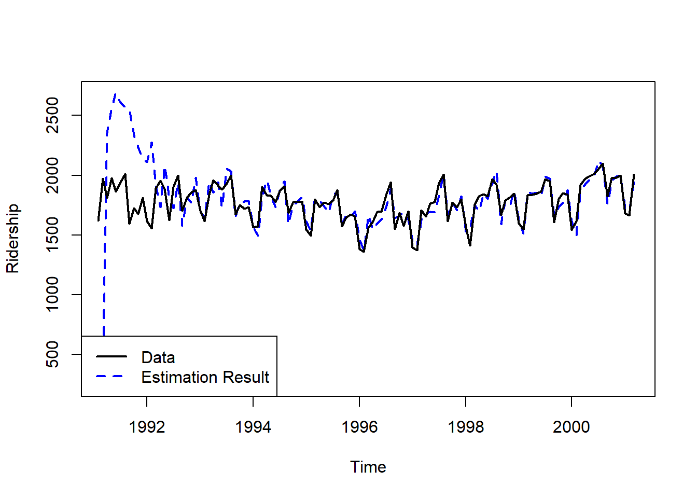
Result! 앞 시점에서 추정이 잘 안되는 이유는 해당 시점까지 주어진 정보(관측값)가 작아 불확실성이 크기 때문이다.
# 추세의 수준에 대한 추정 결과
plot(dropFirst(filtering$m[,1]), # 첫 번째 값 제거
ylab = "Level")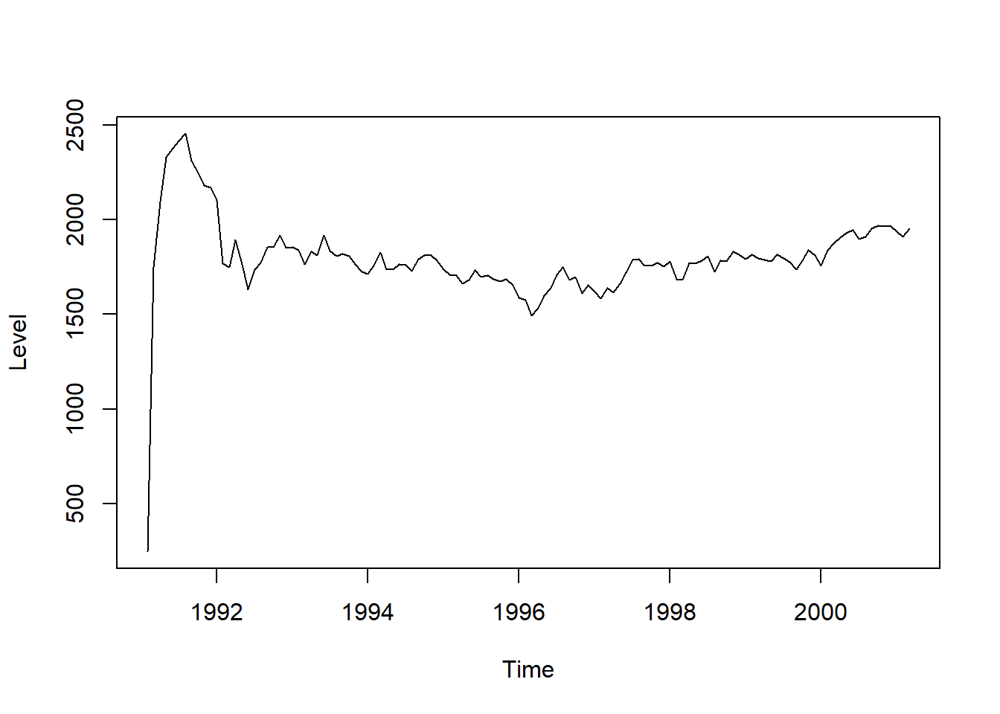
# 추세의 기울기에 대한 추정 결과
plot(dropFirst(filtering$m[,2]), # 첫 번째 값 제거
ylab = "Slope")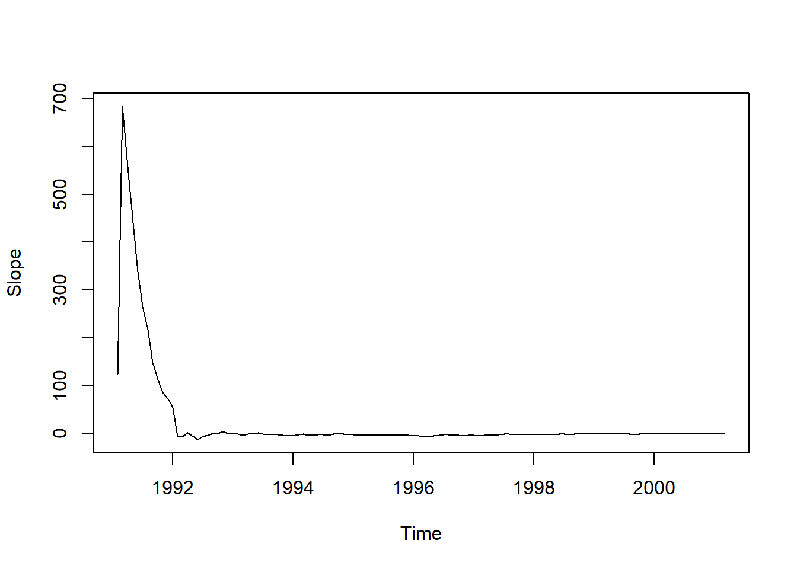
Result! 추세의 수준과 기울기가 시간에 따라 변화하는 것을 알 수 있다.
# 계절성에 대한 추정 결과
plot(dropFirst(filtering$m[,3]), # 첫 번째 값 제거
ylab = "")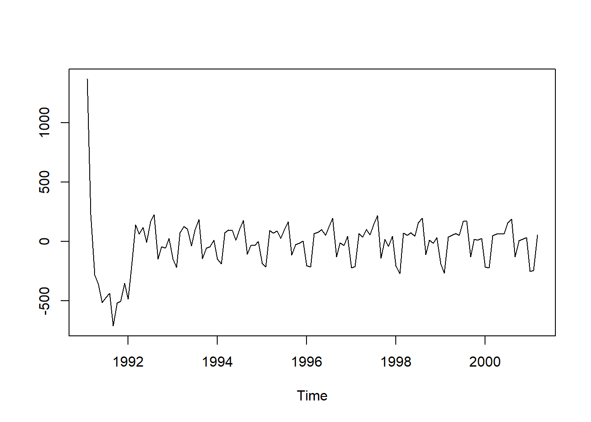
10.2.3.2 Kalman Smoothing
- 함수
dlmSmooth()를 이용하여Kalman Smoothing을 수행할 수 있다.
smoothing <- dlmSmooth(train.ts,
modelfit)
# 구조 확인
str(smoothing, 1)List of 3
$ s : Time-Series [1:123, 1:13] from 1991 to 2001: 1889 1890 1887 1797 1851 ...
$ U.S:List of 123
$ D.S: num [1:123, 1:13] 56.9 42 39.8 39.8 39.7 ...Result! 함수 dlmSmooth()는 3개의 결과를 리스트로 반환한다.
s: Smoothing 분포 \(\pi(\theta_t|y_{1:T})\)의 평균U.S/D.S: Smoothing 분포 \(\pi(\theta_t|y_{1:T})\)의 공분산행렬의 특이값 분해
# 관측된 시계열과 추정된 시계열에 대한 그림
## 1. Kalman Smoothing에 의해 추정된 시계열 값
theta <- modelfit$GG%*%t(smoothing$s) # 상태의 한 시점 예측값 : theta_{t} = G_{t}s_{t-1}
fitted_smooth <- modelfit$FF%*%theta # 시계열의 추정값 : Y_{t} = F_{t}theta_{t}
## 2. 관측된 시계열에 대한 그림
plot(train.ts,
ylab = "Ridership",
lwd = 2) # 선 굵기
## 3. 추정된 시계열에 대한 그림
time <- as.vector(time(train.ts)) # 시간
lines(time, fitted_smooth[1:nTrain], # x축 : 시간, y축 : 추정된 시계열 값
col = "blue", # 선 색깔
lwd = 2, # 선 굵기
lty = 2) # 선 종류
## 4. 범례
legend("bottomleft", # 위치
legend = c("Data", "Estimation Result"),
col = c("black", "blue"),
lty = 1:2,
lwd = 2)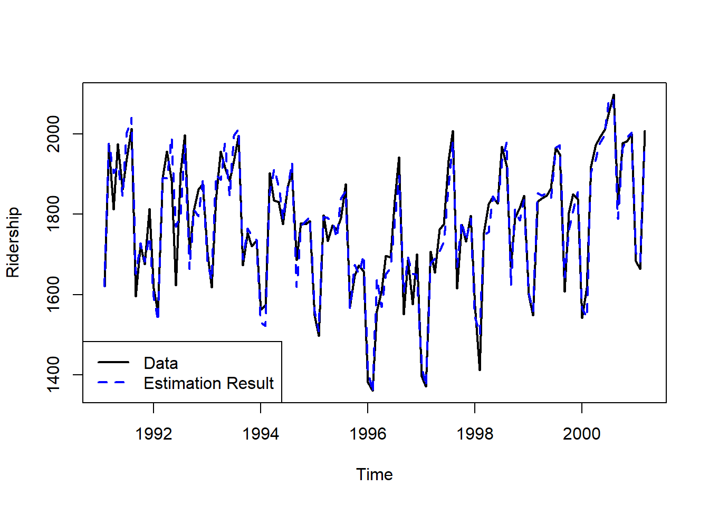
Result! Kalman Filtering과 다르게 전반적으로 관측값과 추정값이 비슷한 것을 볼 수 있다. Kalman Smoothing은 주어진 모든 관측값을 이용하여 상태를 추정하는 반면, Filtering은 과거와 현재값만을 이용하여 상태를 추정하기 때문에 일반적으로 Kalman Smoothing의 추정 결과가 더 좋다.
# 추세의 수준에 대한 추정 결과
plot(smoothing$s[,1],
ylab = "Level")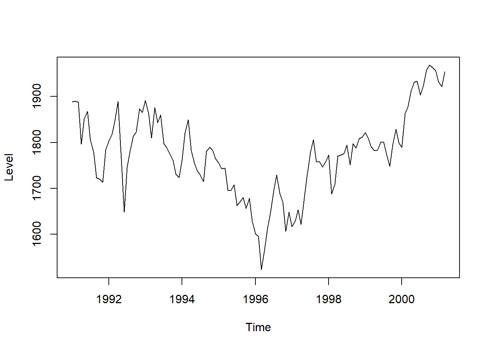
# 추세의 기울기에 대한 추정 결과
plot(smoothing$s[,2],
ylab = "Slope")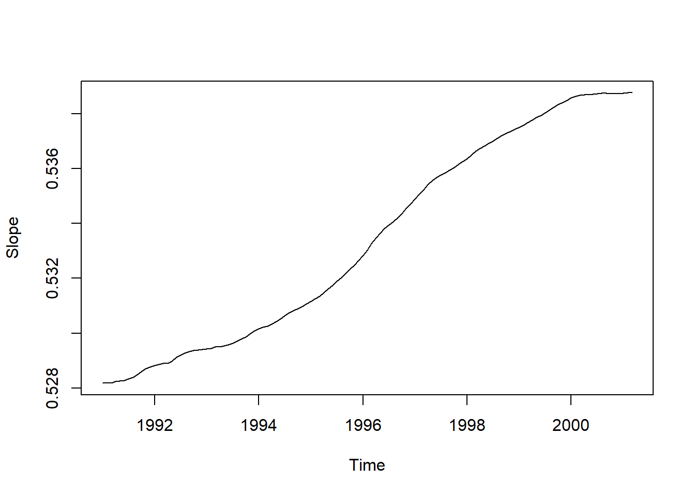
Result! 추세의 수준과 기울기가 시간에 따라 변화하는 것을 알 수 있다.
# 계절성에 대한 추정 결과
plot(smoothing$s[,3],
ylab = "")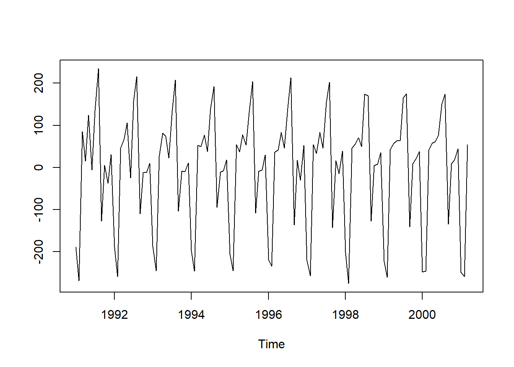
10.2.4 모형 진단
- DLM은 모형 구축 후 모형 진단을 수행해야 한다.
- 잔차의 정규성
- 잔차의 독립성
- 잔차의 평균이 0인지 확인
Caution! 모형 진단을 수행할 때는 함수 residuals()를 이용하여 잔차를 계산할 수 있으며, Kalman Filtering을 통해 얻어진 결과의 잔차를 이용한다.
# 잔차의 정규성
qqnorm(residuals(filtering, sd = FALSE))
qqline(residuals(filtering, sd = FALSE))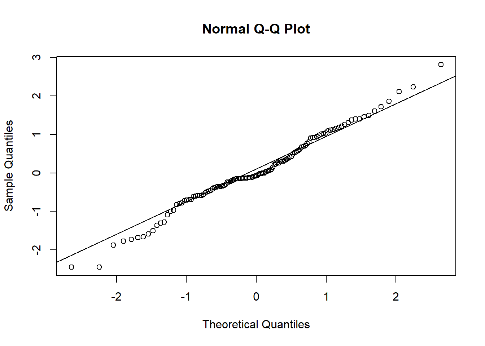
Result! 점들이 직선에 가까우므로 잔차는 정규분포를 따르는 것을 알 수 있다.
# 잔차의 독립성
tsdiag(filtering, main = "")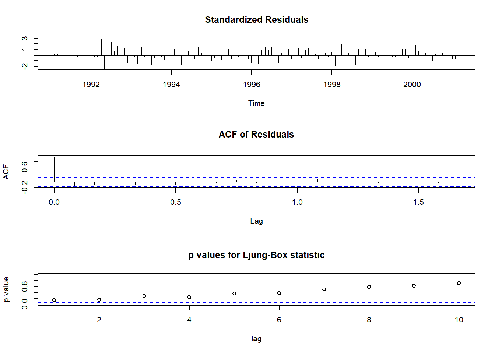
Result! ACF 그림을 살펴보면 시차가 0일 때를 제외하고 막대의 선이 모두 파란색 점선 안에 있으므로 잔차는 1보다 큰 모든 시차에서 통계적으로 유의한 상관관계가 존재한다는 증거가 부족하다.
# 잔차의 평균이 0인지 확인
plot(residuals(filtering, sd = FALSE),
ylab = " Residual")
abline(h = 0)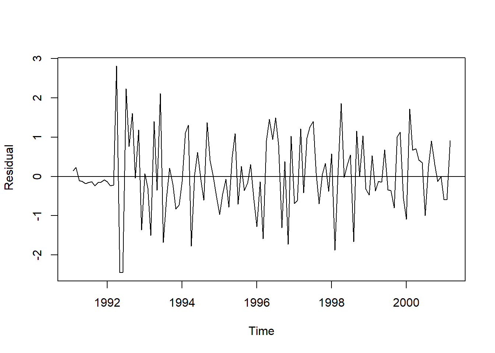
10.2.5 예측
- 예측은 함수
dlmForecast()를 이용하여 수행할 수 있다.
Caution! 함수 dlmForecast()에는 Kalman Filtering을 이용하여 추정된 모형 결과를 입력해야 한다.
pred <- dlmForecast(filtering, # dlmForecast(filtering model)
nAhead = nTest) # Test Dataset의 데이터 포인트 개수만큼 예측값 계산
# 구조 확인
str(pred, 1)List of 4
$ a: Time-Series [1:36, 1:13] from 2001 to 2004: 1954 1955 1955 1956 1957 ...
..- attr(*, "dimnames")=List of 2
$ R:List of 36
$ f: Time-Series [1:36, 1] from 2001 to 2004: 2009 2016 2032 2106 2131 ...
..- attr(*, "dimnames")=List of 2
$ Q:List of 36Result! 함수 dlmForecast()는 4개의 결과를 리스트로 반환한다.
a: 미래 시점의 상태에 대한 평균R: 미래 시점의 상태에 대한 공분산행렬f: 미래 시점의 시계열에 대한 평균Q: 미래 시점의 시계열에 대한 분산
# Test Dataset에 대한 예측 결과
pred$f Jan Feb Mar Apr May Jun Jul Aug Sep Oct Nov Dec
2001 2008.509 2016.032 2032.009 2106.417 2130.732 1822.558 1966.460 1976.196 2002.499
2002 1710.695 1701.343 2014.389 2014.974 2022.498 2038.474 2112.882 2137.197 1829.023 1972.925 1982.661 2008.964
2003 1717.160 1707.809 2020.854 2021.439 2028.963 2044.940 2119.347 2143.663 1835.488 1979.390 1989.126 2015.430
2004 1723.625 1714.274 2027.319 # 예측 결과에 대한 그림
## 1. 관측된 시계열에 대한 그림
plot(train.ts,
xlim = c(1991, 2006.25), ylim = c(1300, 2600),
ylab = "Ridership")
## 2. Kalman Filtering에 의해 추정된 시계열에 대한 그림
lines(dropFirst(filtering$f), # filtering$f : In 2-3-1
lty = 2, # 선 종류
lwd = 2, # 선 굵기
col = "blue") # 선 색깔
## 3. Test Dataset에 대한 시계열 그림
lines(test.ts)
## 4. Test Dataset에 대해 예측된 시계열에 대한 그림
lines(pred$f,
lty = 2, # 선 종류
lwd = 2, # 선 굵기
col = "blue") # 선 색깔
## 5. 95% Predictive Interval (PI)
### 5-1. For x축
timelo <- seq(tail(time, 1) + 1/12, by = 1/12,
length = nTest)
### 5-2. 95% PI
polygon(x = c(timelo, rev(timelo)),
y = c(pred$f + qnorm(0.975)*sqrt(unlist(pred$Q)), # Using Gaussian Dist.
rev(pred$f - qnorm(0.975)*sqrt(unlist(pred$Q)))), # Using Gaussian Dist.
col = scales::alpha("blue", alpha = 0.2)) # 색깔
## 6. 범례
legend("topright", # 위치
legend = c("Data", "Fitted filtering"),
col = c("black", "blue"),
lty = 1:2,
lwd = 2)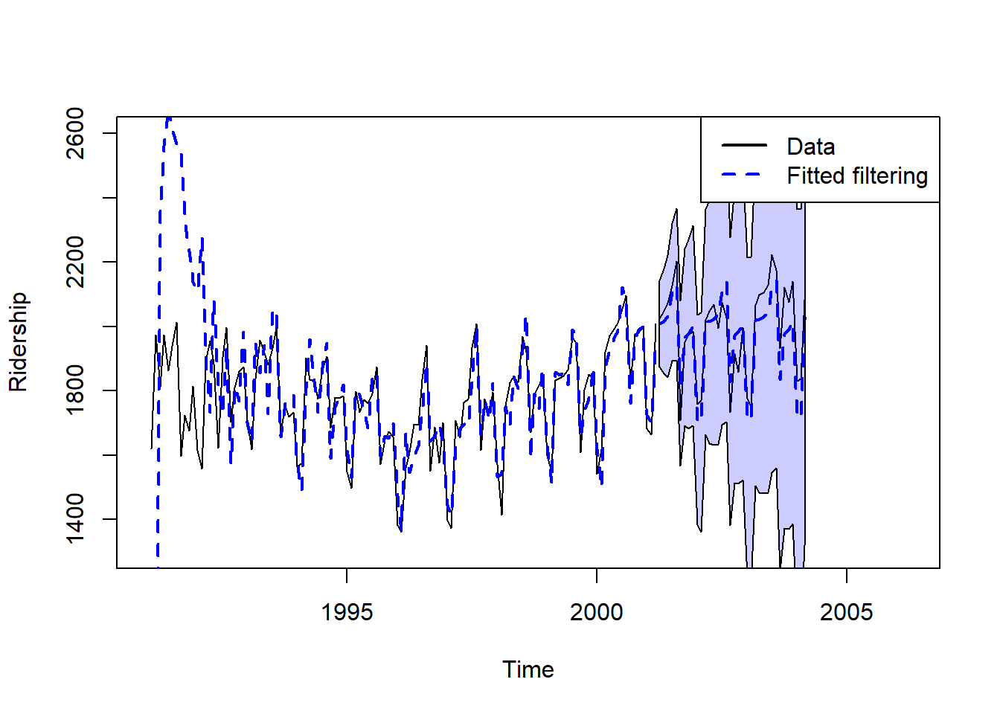
# 예측 정확도
forecast::accuracy(pred$f, test.ts) ME RMSE MAE MPE MAPE ACF1 Theil's U
Test set 29.42515 75.44841 64.50184 1.393272 3.269395 0.6512708 0.437761210.3 Bayesian Structural Time Series
- Bayesian Structural Time Series (BSTS)는
Structural Time Series Model에 Bayesian 기법을 적용하는 방법이다. - Structural Time Series Model은 Linear Gaussian State Space Model로써
DLM과 동일한 개념이다. \[ \begin{align*} Y_{t}&=Z^{T}_{t}\theta_{t}+\epsilon_{t},~~~~~~~\epsilon_{t}\sim N(0, \sigma^2_{\epsilon}), \\ \theta_{t+1}&=T_{t}\theta_{t}+R_{t}\eta_{t},~~~\eta_{t}\sim N_{q}(0,Q_{t}). \end{align*} \]- 첫 번째는 관측방정식, 두 번째는 상태방정식이다.
- \(Y_{t}\) : 시점 \(t\)에서 시계열
- \(\theta_{t}\) : 시점 \(t\)에서 상태
- 예를 들어, 추세와 계절성 등
- \(Z_{t}\), \(T_{t}\), \(R_{t}\) : 0과 1을 포함하여 알고 있는 값과 미지의 모수를 포함하는 행렬
- \(Z_{t}\) : \(p\times 1\) 결과 행렬 (Output Matirx)
- \(T_{t}\) : \(p\times p\) 전이 행렬 (Transition Matrix)
- \(R_{t}\) : \(p\times q\) 제어 행렬 (Control Matrix)
- \(\epsilon_{t}\), \(\eta_{t}\) : 오차로써, 연속적으로 상관관계가 없으며 또한 모든 기간 동안 서로 상관관계가 없는 것으로 가정한다.
- \(\eta_{t}\) : \(q\times q\) 상태확산행렬(State Diffusion Matrix) \(Q_{t}\)을 가진 \(q \times 1\) 벡터 (\(q\le d\))
- 첫 번째는 관측방정식, 두 번째는 상태방정식이다.
10.3.1 Package BSTS
- BSTS는 package
"bsts"를 이용하여 다룰 수 있다.- 해당 package는 BSTS 모형의 사후분포로부터 Markov chain Monte Carlo (MCMC) 표본을 추출하여 모형 구축과 예측을 수행한다.
10.3.1.1 Trend Model
10.3.1.1.1 Local Level Model
- 시계열을 추세의 수준 \(\mu_{t}\)로만 표현한 가장 간단한 모형식이다.
- Random Walk + 오차
- \(Z^{T}_{t} = 1\)
- \(T_{t} = 1\)
- \(\theta_{t}=\mu_{t}\)
- \(R_{t} = 1\)
- \(\eta_{t} = \xi_{t}\)
\[ \begin{align*} Y_{t} &= \mu_{t} + \epsilon_{t},~~~~\epsilon_{t}\sim N(0, \sigma^2_{\epsilon}),\\ \mu_{t+1} &= \mu_{t} + \xi_{t}, ~~~\xi_{t}\sim N(0,\sigma^2_{\xi }). \end{align*} \]
- 함수
AddLocalLevel()을 이용하여 모형식을 나타낼 수 있다.- 오차의 분산 \(\sigma^2_{\epsilon}\)과 \(\sigma^2_{\xi }\)에 Inverse Gamma Prior을 할당한다.
ss <- list()
ss <- bsts::AddLocalLevel(ss, y) # y : Time Series 10.3.1.1.2 Local Linear Trend Model
- 시계열을 추세의 수준 \(\mu_{t}\)과 추세의 기울기(=추세의 증가률) \(\delta_{t}\)로 표현한 모형식이다.
- \(Z^{T}_{t} = (1, 0)\)
- \(T_{t} = \left[\begin{matrix}1 & 1\\ 0 & 1 \end{matrix}\right]\)
- \(\theta_{t}=(\mu_{t}, \delta_{t})^{T}\)
- \(R_t=\left[\begin{matrix} 1 & 0 \\ 0 & 1 \end{matrix}\right]\)
- \(\eta_{t}=(\xi_{t},\zeta_{t})^{T}\) \[ \begin{align*} Y_{t} &= \mu_{t} + \epsilon_{t},~~~~~~~~~~~\epsilon_{t}\sim N(0, \sigma^2_{\epsilon}),\\ \mu_{t+1} &= \mu_{t} + \delta_{t} + \xi_{t}, ~~~\xi_{t}\sim N(0,\sigma^2_{\xi }),\\ \delta_{t+1} &= \delta_{t} + \zeta_{t}, ~~~~~~~~~~~~\zeta_{t}\sim N(0,\sigma^2_{\zeta}). \end{align*} \]
- Local Level Model보다 유연하며, 단기 예측에 유용하다.
- 함수
AddLocalLinearTrend()을 이용하여 모형식을 나타낼 수 있다.- 오차의 분산 \(\sigma^2_{\epsilon}\), \(\sigma^2_{\xi }\)와 \(\sigma^2_{\zeta}\)에 Inverse Gamma Prior을 할당한다.
ss <- list()
ss <- bsts::AddLocalLinearTrend(ss, y) # y : Time Series 10.3.1.2 Seasonality Model
10.3.1.2.1 Regression with Seasonal Dummy Variables
- 시계열의 계절 주기가 \(s\)일 때, \(s\)개의 더미 변수에 대한 회귀모형으로 모형식을 나타낼 수 있다.
- \(Z^{T}_{t} = (1, 0,\ldots, 0)\)
- \(T_{t} = \left[\begin{matrix} -1 & - 1 & \cdots & -1 & -1 \\ 1 & 0 & \cdots & 0 & 0\\ 0 & 1 & \cdots & 0 & 0 \\ \vdots &\vdots &\vdots & \vdots &\vdots \\ 0 & 0 & \cdots & 1 & 0 \end{matrix}\right]\)
- \(\theta_{t}=(\tau_{t}, \ldots, \tau_{t-s+2})^{T}\)
- \(R_{t}=(1,0,\ldots,0)^{T}\)
- \(\eta_{t}=\omega_{t}\) \[ \begin{align*} Y_{t} &= \tau_{t} + \epsilon_{t},~~~~~~~~~~\epsilon_{t}\sim N(0, \sigma^2_{\epsilon}),\\ \tau_{t+d} &= -\sum_{i=0}^{s-2} \tau_{t-i\times d} + \omega_{t}, ~~~\omega_{t}\sim N(0,\sigma^2_{\omega}). \end{align*} \]
- \(d\) : Season Duration로 주로 1을 지정한다.
- 계절성을 포착하기 위해 흔히 사용되는 모형으로, 서로 다른 주기를 가진 다중 계절성으로 모형을 확장할 수 있다.
- 함수
AddSeasonal()을 이용하여 모형식을 나타낼 수 있다.- 오차의 분산 \(\sigma^2_{\epsilon}\)와 \(\sigma^2_{\omega}\)에 Inverse Gamma Prior을 할당한다.
ss <- list()
ss <- bsts::AddSeasonal(ss, y, # y : Time Series
nseasons, # Season의 개수 = Frequency
season.duration) # 각 Season에서 관측 개수
# cycle (s) = season.duration * nseasons- 예를 들어, 월별 시계열에 대해
nseasons = 12와season.duration = 1를 입력할 수 있다. - 주별 시계열에 대해
nseasons = 52와season.duration = 1를 입력할 수 있다.
10.3.1.3 모형 훈련*
- 모형 훈련은 함수
bsts()을 이용하여 수행할 수 있다.
bsts(formula, state.specification, family = c("gaussian", "logit", "poisson", "student"), data, niter, seed = NULL, ...)formula: 시계열과 예측 변수의 관계를 표현하기 위한 함수로써 일반적으로시계열 ~ 예측 변수의 형태로 표현한다.state.specification: 함수AddLocalLinearTrend()와AddSeasonal()등을 포함하고 있는 리스트family: 관측방정식의 분포data:formula에 포함하고 있는 변수들의 데이터셋(Data Frame)niter: 추출하기 원하는 MCMC 표본 개수seed: 실행할 때마다 동일한 결과가 출력되도록 하는 시드값
10.3.2 BSTS without 예측 변수
Caution! 예제 데이터 Amtrak은 추세와 계절성을 동시에 가지고 있는 시계열로써 Local Linear Trend + Regression with Seasonal Dummy Variables Model을 이용하여 분석을 수행한다.
\[ \begin{align*} Y_{t} &= \mu_{t} + \tau_{t} + \epsilon_{t},~~~~~~~~~~~~~~~~~\epsilon_{t}\sim N(0, \sigma^2_{\epsilon})\\ \mu_{t+1} &= \mu_{t} + \delta_{t} + \xi_{t}, ~~~~~~~~~~~~~~~~~\xi_{t}\sim N(0,\sigma^2_{\xi }),\\ \delta_{t+1} &= \delta_{t} + \zeta_{t}, ~~~~~~~~~~~~~~~~~~~~~~~~~\zeta_{t}\sim N(0,\sigma^2_{\zeta})\\ \tau_{t+d} &= -\sum_{i=0}^{s-2} \tau_{t-i\times d} + \omega_{t}, ~~~~~~\omega_{t}\sim N(0,\sigma^2_{\omega}) \end{align*} \]
# 1. 모형 정의
ss <- list()
ss <- bsts::AddLocalLinearTrend(ss, train.ts) # Local Linear Trend
ss <- bsts::AddSeasonal(ss, train.ts, # Seasonality
nseasons = 12, # Due to Monthly Time Series
season.duration = 1) # 2. 모형 훈련
set.seed(100) # For 시드 고정
BSTS.fit <- bsts(train.ts,
state.specification = ss,
niter = 1000, # niter : MCMC 표본 개수
seed = 100) =-=-=-=-= Iteration 0 Tue Jul 1 23:15:30 2025
=-=-=-=-=
=-=-=-=-= Iteration 100 Tue Jul 1 23:15:30 2025
=-=-=-=-=
=-=-=-=-= Iteration 200 Tue Jul 1 23:15:31 2025
=-=-=-=-=
=-=-=-=-= Iteration 300 Tue Jul 1 23:15:31 2025
=-=-=-=-=
=-=-=-=-= Iteration 400 Tue Jul 1 23:15:31 2025
=-=-=-=-=
=-=-=-=-= Iteration 500 Tue Jul 1 23:15:31 2025
=-=-=-=-=
=-=-=-=-= Iteration 600 Tue Jul 1 23:15:31 2025
=-=-=-=-=
=-=-=-=-= Iteration 700 Tue Jul 1 23:15:32 2025
=-=-=-=-=
=-=-=-=-= Iteration 800 Tue Jul 1 23:15:32 2025
=-=-=-=-=
=-=-=-=-= Iteration 900 Tue Jul 1 23:15:32 2025
=-=-=-=-=summary(BSTS.fit)$residual.sd
[1] 38.92436
$prediction.sd
[1] 94.05628
$rsquare
[1] 0.9412753
$relative.gof
[1] 0.6885582# 3. 예측
burn <- SuggestBurn(0.1, BSTS.fit) # 추출된 MCMC 표본에서 버리고자 하는 표본 개수 / 10% 버림
BSTS.forecast <- predict(BSTS.fit,
horizon = nTest, # Test Dataset의 데이터 포인트 개수만큼 예측값 계산
burn = burn,
quantiles = c(0.025, 0.975)) # For 95% Confidence Interval# 예측값
BSTS.forecast$mean [1] 2003.388 2031.024 1999.959 2112.413 2158.385 1848.843 1982.130 1977.007 2022.342 1771.865 1742.146 2045.036 2050.404 2081.918 2049.971 2156.432 2205.446 1892.956 2028.111 2027.722 2068.745
[22] 1820.691 1795.521 2097.807 2102.872 2131.473 2105.053 2215.429 2264.266 1956.407 2087.473 2085.637 2128.834 1882.315 1855.436 2158.037plot(BSTS.forecast)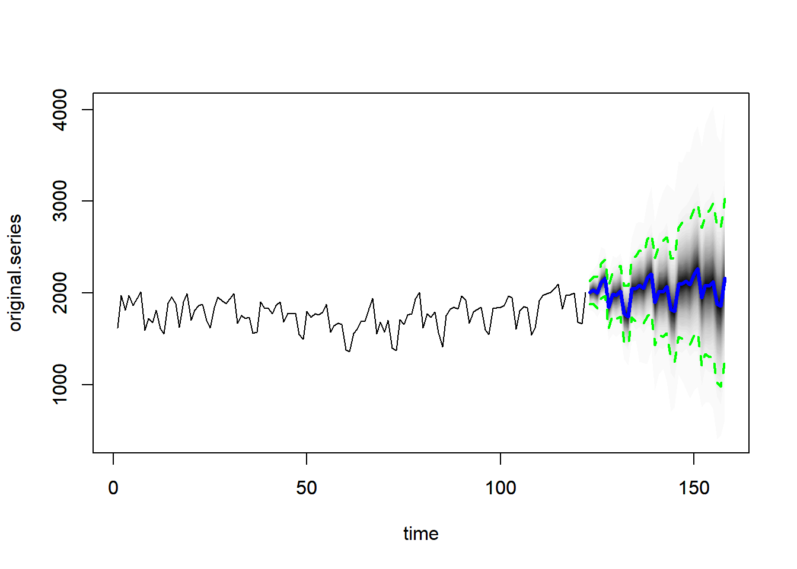
# 예측 정확도
forecast::accuracy(BSTS.forecast$mean, test.ts) ME RMSE MAE MPE MAPE ACF1 Theil's U
Test set -32.99797 67.79132 48.2604 -1.761145 2.498073 0.5162502 0.394059810.3.3 BSTS with 예측 변수
Caution! 예제 데이터 Amtrak은 추세와 계절성을 동시에 가지고 있는 시계열로써 Local Linear Trend + Regression with Seasonal Dummy Variables Model을 이용하여 분석을 수행한다. 이때 오차의 분산 \(\sigma^2_{\epsilon}\), \(\sigma^2_{\xi }\), \(\sigma^2_{\zeta}\)와 \(\sigma^2_{\omega}\)에는 Inverse Gamma Prior이 할당되고, 회귀모수 \(\beta_i\)에는 변수 선택에 유용한 Spike and Slab Prior이 할당된다.
\[ \begin{align*} Y_{t} &= \mu_{t} + \tau_{t} +\beta_0+\sum_{i=1}^j \beta_j X_{i, t} + \epsilon_{t},~~~~~~~~~~~~~~~~~\epsilon_{t}\sim N(0, \sigma^2_{\epsilon})\\ \mu_{t+1} &= \mu_{t} + \delta_{t} + \xi_{t}, ~~~~~~~~~~~~~~~~~~~~~~~~~~~~~~~~~~~~~~~~~~~~~~\xi_{t}\sim N(0,\sigma^2_{\xi }),\\ \delta_{t+1} &= \delta_{t} + \zeta_{t}, ~~~~~~~~~~~~~~~~~~~~~~~~~~~~~~~~~~~~~~~~~~~~~~~~~~~~~~\zeta_{t}\sim N(0,\sigma^2_{\zeta})\\ \tau_{t+d} &= -\sum_{i=0}^{s-2} \tau_{t-i\times d} + \omega_{t}, ~~~~~~~~~~~~~~~~~~~~~~~~~~~~~~~~~~~~\omega_{t}\sim N(0,\sigma^2_{\omega}) \end{align*} \]
# 1. 모형 정의
ss <- list()
ss <- bsts::AddLocalLinearTrend(ss, train.ts) # Local Linear Trend
ss <- bsts::AddSeasonal(ss, train.ts, # Seasonality
nseasons = 12, # Due to Monthly Time Series
season.duration = 1) # 2. 모형 훈련
## 2-1. Create Data Frame with Time Series and Predictor Variable
Train.Data <- data.frame("y"= train.ts,
"Lag" = ridership.df$Lag1[1:nTrain]) # In 1-2
Train.Data %>%
as_tibble# A tibble: 122 × 2
y Lag
<dbl> <dbl>
1 1621. 1709.
2 1973. 1621.
3 1812. 1973.
4 1975. 1812.
5 1862. 1975.
6 1940. 1862.
7 2013. 1940.
8 1596. 2013.
9 1725. 1596.
10 1676. 1725.
# ℹ 112 more rowsTest.Data <- data.frame("y"= test.ts,
"Lag" = ridership.df$Lag1[-(1:nTrain)]) # In 1-2## 2-2. Train Model
set.seed(100) # For 시드 고정
BSTS.fit <- bsts(y ~ Lag,
state.specification = ss,
niter = 1000, # niter : MCMC 표본 개수
data = Train.Data,
seed = 100) =-=-=-=-= Iteration 0 Tue Jul 1 23:15:33 2025
=-=-=-=-=
=-=-=-=-= Iteration 100 Tue Jul 1 23:15:33 2025
=-=-=-=-=
=-=-=-=-= Iteration 200 Tue Jul 1 23:15:33 2025
=-=-=-=-=
=-=-=-=-= Iteration 300 Tue Jul 1 23:15:33 2025
=-=-=-=-=
=-=-=-=-= Iteration 400 Tue Jul 1 23:15:33 2025
=-=-=-=-=
=-=-=-=-= Iteration 500 Tue Jul 1 23:15:34 2025
=-=-=-=-=
=-=-=-=-= Iteration 600 Tue Jul 1 23:15:34 2025
=-=-=-=-=
=-=-=-=-= Iteration 700 Tue Jul 1 23:15:34 2025
=-=-=-=-=
=-=-=-=-= Iteration 800 Tue Jul 1 23:15:34 2025
=-=-=-=-=
=-=-=-=-= Iteration 900 Tue Jul 1 23:15:34 2025
=-=-=-=-=# 3. 예측
burn <- SuggestBurn(0.1, BSTS.fit) # 추출된 MCMC 표본에서 버리고자 하는 표본 개수 / 10% 버림
BSTS.forecast <- predict(BSTS.fit,
horizon = nTest, # Test Dataset의 데이터 포인트 개수만큼 예측값 계산
newdata = Test.Data[,"Lag"], # Test Dataset에 대한 예측 변수
burn = burn,
quantiles = c(0.025, 0.975)) # For 95% Confidence Interval# 예측값
BSTS.forecast$mean [1] 2004.011 2027.659 2004.908 2113.354 2157.394 1848.552 1984.792 1979.400 2024.133 1771.261 1744.289 2048.147 2054.667 2083.526 2059.905 2164.176 2212.059 1899.455 2037.392 2038.411 2079.972
[22] 1828.708 1807.213 2108.962 2115.758 2143.288 2123.735 2229.043 2276.999 1968.738 2102.143 2101.904 2144.758 1892.212 1869.797 2172.720plot(BSTS.forecast)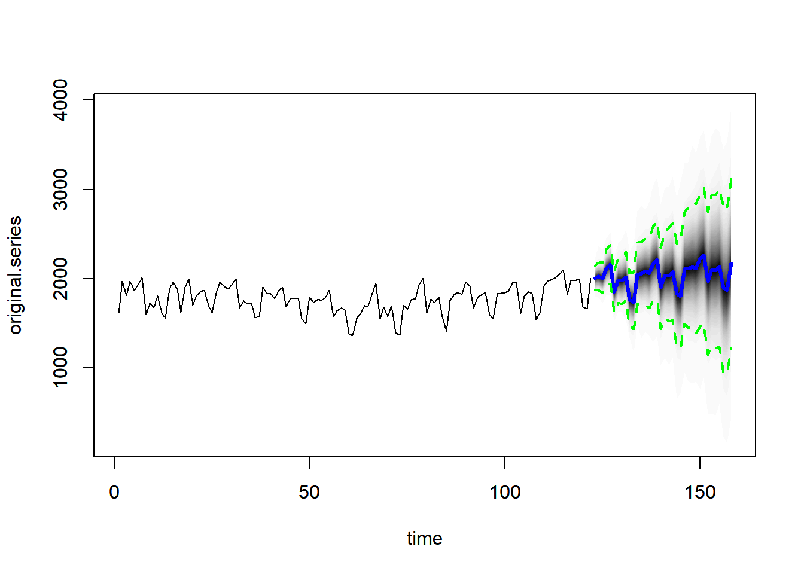
# 예측 정확도
forecast::accuracy(BSTS.forecast$mean, test.ts) ME RMSE MAE MPE MAPE ACF1 Theil's U
Test set -40.77419 72.42539 52.84702 -2.148171 2.734903 0.5366444 0.4223498